Logistic regression
Jose Parreno Garcia
December 2017
- 1 Logistic regression - concept:
- 2 Implementing a simple logistic regression
- 3 Naive Bayes Classifier
- 4 KNN - k Nearest Neighbours
- 5 Building tree based models using rpart, cTree and C5.0
- 6 Building Predictive Models with the caret Package
- 6.1 Preprocessing
- 6.2 Training and predicting with knn using caret package
- 6.3 Controlling training method parameters caret package
- 6.4 Controlling the tuning of the algorithms parameters
- 6.5 C5 algorithm with caret
- 6.6 cTree algorithm with caret
- 6.7 Comparing the 3 built models with Resample function
- 7 Selecting important features with RFE, varImp and Boruta
library(knitr)In the previous section we learnt how to model and predict continuous response variables. In this section we will learn how to deal with categorial variables:
- The concepts
- Understanding accuracy measures
How to build and predictive model with the caret package
How to model and predict categorical variables using:
- Logistic regression
- Naive bayes
- KNN
- rpart, cTree and C5.0
Advanced feature selection techniques
1 Logistic regression - concept:
If we use linear regression to model dichotomous (2) variable the resulting model might not restrict the predictive values to only 0 or 1. You can see in the following image how using linear regression will build a line where, at any given value of X it can many different values of Y. Opposed to that, is logistic regression, which generally shows an “s” shape. With this S shape we either achive, values very close to 0, values very close to 1 and a small region with values between 0 and 1.
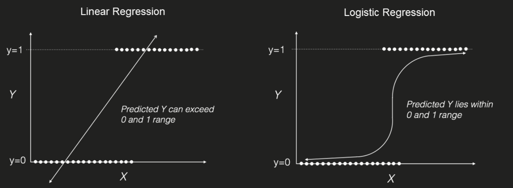
In order to achieve this “s” shape, the log odds of the particular event we are trying to predict, is modelled. The aim of this section is not to demostrate the equations (remember we are doing an express course), so I will leave below the equations:
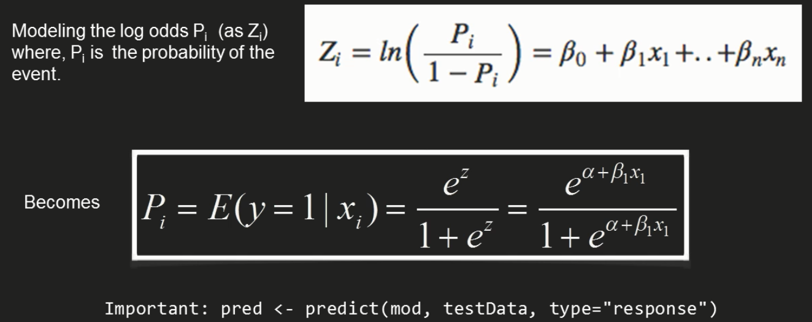
This equation can be implemented using the glm function by setting one of the arguments to binomial. In addition, when predicting, we need to ensure we put the type=response, if not, we will be calculating the log odds of P (Z values) instead of the actual probability. Anyway we will see this in the following sections.
2 Implementing a simple logistic regression
We will be using the BreastCancer dataset from the mlbenc package. The goal for this logistic regression model will be to predict if the cases in the dataset are benign or not. In this case, the class, is the response variable, and the rest of the variables are factor variables.
2.1 Getting the data
require(mlbench)
data(BreastCancer, package = 'mlbench')
bc = BreastCancer[complete.cases(BreastCancer), ]
# Checking the dataset
str(bc)## 'data.frame': 683 obs. of 11 variables:
## $ Id : chr "1000025" "1002945" "1015425" "1016277" ...
## $ Cl.thickness : Ord.factor w/ 10 levels "1"<"2"<"3"<"4"<..: 5 5 3 6 4 8 1 2 2 4 ...
## $ Cell.size : Ord.factor w/ 10 levels "1"<"2"<"3"<"4"<..: 1 4 1 8 1 10 1 1 1 2 ...
## $ Cell.shape : Ord.factor w/ 10 levels "1"<"2"<"3"<"4"<..: 1 4 1 8 1 10 1 2 1 1 ...
## $ Marg.adhesion : Ord.factor w/ 10 levels "1"<"2"<"3"<"4"<..: 1 5 1 1 3 8 1 1 1 1 ...
## $ Epith.c.size : Ord.factor w/ 10 levels "1"<"2"<"3"<"4"<..: 2 7 2 3 2 7 2 2 2 2 ...
## $ Bare.nuclei : Factor w/ 10 levels "1","2","3","4",..: 1 10 2 4 1 10 10 1 1 1 ...
## $ Bl.cromatin : Factor w/ 10 levels "1","2","3","4",..: 3 3 3 3 3 9 3 3 1 2 ...
## $ Normal.nucleoli: Factor w/ 10 levels "1","2","3","4",..: 1 2 1 7 1 7 1 1 1 1 ...
## $ Mitoses : Factor w/ 9 levels "1","2","3","4",..: 1 1 1 1 1 1 1 1 5 1 ...
## $ Class : Factor w/ 2 levels "benign","malignant": 1 1 1 1 1 2 1 1 1 1 ...summary(bc)## Id Cl.thickness Cell.size Cell.shape Marg.adhesion Epith.c.size Bare.nuclei Bl.cromatin Normal.nucleoli Mitoses Class
## Length:683 1 :139 1 :373 1 :346 1 :393 2 :376 1 :402 3 :161 1 :432 1 :563 benign :444
## Class :character 5 :128 10 : 67 2 : 58 2 : 58 3 : 71 10 :132 2 :160 10 : 60 2 : 35 malignant:239
## Mode :character 3 :104 3 : 52 10 : 58 3 : 58 4 : 48 2 : 30 1 :150 3 : 42 3 : 33
## 4 : 79 2 : 45 3 : 53 10 : 55 1 : 44 5 : 30 7 : 71 2 : 36 10 : 14
## 10 : 69 4 : 38 4 : 43 4 : 33 6 : 40 3 : 28 4 : 39 8 : 23 4 : 12
## 2 : 50 5 : 30 5 : 32 8 : 25 5 : 39 8 : 21 5 : 34 6 : 22 7 : 9
## (Other):114 (Other): 78 (Other): 93 (Other): 61 (Other): 65 (Other): 40 (Other): 68 (Other): 68 (Other): 172.2 Simple preprocessing
As you can observe:
- There is an ID column. We dont really want this, so we will take it out.
- The first variables seem to be ordered factors, so we could change these to numeric. To be clear, to do this, we need to be careful and first transform the factor into a character, and then into a number. If not, the values can be messed up. Anyway, this is an optional step.
- Change the name of the class to a factor of 0 and 1
# Deleting first column
bc = bc[, -which(colnames(bc) == "Id")]
# Transforming ordered factors into numeric
for(i in 1:9){
bc[,i] = as.numeric(as.character(bc[,i]))
}
# Changing naming of the response variable
bc$Class = ifelse(bc$Class == "malignant",1,0)
bc$Class = factor(bc$Class, levels = c(0,1))2.3 Splitting
As you can see from the table function, there is some class imbalance (not much compared to other problems), but still there is. We could do any of the following:
- We need to ensure that any samples we create have the same distribution of classes. So if you want to create the train or test samples directly with this unbalanced classes, then ensure you use the sample.split() function.
- However, given that I assume you know how to do this from the previous section, we can look at the concepts of downsizing, upsampling and hybrid between both.
- Basically, downsizing is taking the majority class data (in this case the cases without cancer), and picking random records until to match approximantely the number of records in the minority class (in this case 239 cases).
- Upsizing is the opposite. Taking the minority class and randomnly duplicating cases, until you reach approximantely the number of cases in the majority class.
- HYbrid is a bit more complex, but basically there are a couple of widely used algorithms for this: the SMOTE and the ROSE algorithm.
table(bc$Class)##
## 0 1
## 444 239# Creating Train and Test data using the caret package
library(caret)
# Define the not in function
'%ni%' = Negate('%in%')
# Prevent priting scientific notation
options(scipen = 999)
# Prep train and test
set.seed(100)
trainDataIndex = createDataPartition(bc$Class, p = 0.7, list = F)
trainData = bc[trainDataIndex,]
testData = bc[-trainDataIndex,]
# Downsampling
down_train = downSample(x = trainData[, colnames(trainData) %ni% "Class"]
, y = trainData$Class)
table(down_train$Class)##
## 0 1
## 168 168# Upsampling
up_train = upSample(x = trainData[, colnames(trainData) %ni% "Class"]
, y = trainData$Class)
table(up_train$Class)##
## 0 1
## 311 3112.4 First model using the down sample set
We use the down sample train data to model our first model. Then we can test it on the initial train/test datasets.
# Building the model with the down sized data. Ensure you add family binomial
logitmod = glm(Class ~ Cl.thickness + Cell.size + Cell.shape, family = binomial, data = down_train)
summary(logitmod)##
## Call:
## glm(formula = Class ~ Cl.thickness + Cell.size + Cell.shape,
## family = binomial, data = down_train)
##
## Deviance Residuals:
## Min 1Q Median 3Q Max
## -4.1657 -0.1831 -0.0531 0.0549 2.6734
##
## Coefficients:
## Estimate Std. Error z value Pr(>|z|)
## (Intercept) -7.2793 0.9557 -7.617 0.000000000000026 ***
## Cl.thickness 0.5353 0.1367 3.917 0.000089628283919 ***
## Cell.size 0.7427 0.2798 2.655 0.00794 **
## Cell.shape 0.8503 0.2672 3.183 0.00146 **
## ---
## Signif. codes: 0 '***' 0.001 '**' 0.01 '*' 0.05 '.' 0.1 ' ' 1
##
## (Dispersion parameter for binomial family taken to be 1)
##
## Null deviance: 465.79 on 335 degrees of freedom
## Residual deviance: 90.23 on 332 degrees of freedom
## AIC: 98.23
##
## Number of Fisher Scoring iterations: 8# Predict the probability of the event for each observation
pred = predict(logitmod, newdata = testData, type = "response")
head(pred)## 1 2 5 8 13 15
## 0.04699168 0.85436794 0.02805903 0.02263590 0.54396155 0.99842756As you can see, we have calculated probabilites of each record. What we haven’t assigned, is those probabilites to a certain class. Common practice is to start simple and have a treshold of 0.5, meaning that anything below that will get assigned to 0 and anything above, will get assigned to 1. We will do this, but the threshold is something we could play with depending on our goal metrics. We will talk about this later.
# Converting the probabilites to class predictions
y_pred_num = ifelse(pred > 0.5, 1, 0)
y_pred = factor(y_pred_num, levels = c(0,1))
y_act = testData$Class2.5 Confusion matrix for this first model
You can see that the first model has initially an accuracy of 94%. That is encouraging, but let’s think about this for a moment. If we had a problem where we had 100 records, being 99 of those benign and only 1 cancer, then we could have a 99% accuracy if we predicted that all of them where benign (ie we would be only making one error). However, that error is the one that we actually want to predict, therefore, accuracy is not the metric we want to use.
That is why we compute the confusion matrix. In the confusion metric we can see: * Accuracy * Sensitivity, which represents the proportion of actual positive events that the model predicted as a positive event. In this case, 70/(70+1) * Specificity, is the proportion of non positive events (ie class 0) that the model predicted correctly, 122/(122+11)
In our case, specificity would be very important to us, and we see that out of 71 cases, we are actually predicting 70 correctly! Quite a good start.
# Accuracy
mean(y_pred == y_act)## [1] 0.9411765# Confusion matrix
caret::confusionMatrix(y_pred, y_act, positive = "1")## Confusion Matrix and Statistics
##
## Reference
## Prediction 0 1
## 0 122 1
## 1 11 70
##
## Accuracy : 0.9412
## 95% CI : (0.8995, 0.9692)
## No Information Rate : 0.652
## P-Value [Acc > NIR] : < 0.00000000000000022
##
## Kappa : 0.8745
## Mcnemar's Test P-Value : 0.009375
##
## Sensitivity : 0.9859
## Specificity : 0.9173
## Pos Pred Value : 0.8642
## Neg Pred Value : 0.9919
## Prevalence : 0.3480
## Detection Rate : 0.3431
## Detection Prevalence : 0.3971
## Balanced Accuracy : 0.9516
##
## 'Positive' Class : 1
## Remember how we assigned a threshold before to define a class based on the probability we calculated? Well, this threshold is want will determine the metrics we just mentioned. As an example, imagine that we were very conservative, and we want to flag any possible case of cancer if we detect the slightest symptom, then our threshold would be quite low. This would surely increase our sensitivity, probably making it 100%, but we would making more errors with the non-cancer cases, ie reducing specificity. Let’s check that very quickly below.
y_pred_num1 = ifelse(pred > 0.1, 1, 0)
y_pred1 = factor(y_pred_num1, levels = c(0,1))
y_act1 = testData$Class
caret::confusionMatrix(y_pred1, y_act1, positive = "1")## Confusion Matrix and Statistics
##
## Reference
## Prediction 0 1
## 0 109 0
## 1 24 71
##
## Accuracy : 0.8824
## 95% CI : (0.83, 0.9231)
## No Information Rate : 0.652
## P-Value [Acc > NIR] : 0.00000000000005102
##
## Kappa : 0.7597
## Mcnemar's Test P-Value : 0.00000266795459362
##
## Sensitivity : 1.0000
## Specificity : 0.8195
## Pos Pred Value : 0.7474
## Neg Pred Value : 1.0000
## Prevalence : 0.3480
## Detection Rate : 0.3480
## Detection Prevalence : 0.4657
## Balanced Accuracy : 0.9098
##
## 'Positive' Class : 1
## This example shows how building a logistic model also involves some tradeoff between our goal metrics. One way to go about his is just how i’ve done it, which is manually changing and reviewing results. Another much more intelligent way is using the ROC curves.
2.6 ROC curve
With this curve, we can plot the results of sensitivity and specificity and check what threshold achieves the balance we want to have.
- One plot we can make is to use te area under the ROC curve. This is a proxy for accuracy.
- The other plot is adding the threshold.
library(InformationValue)
plotROC(y_act, pred)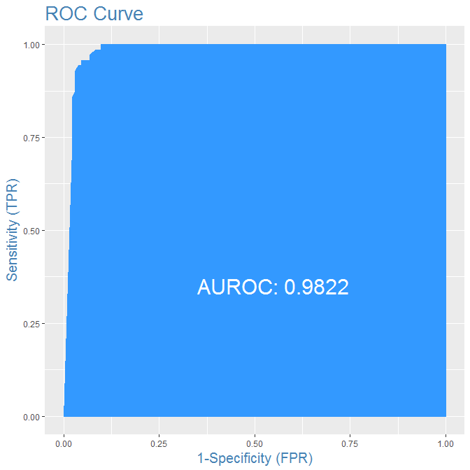
library(ROCR)
ROCRpred = prediction(pred, y_act)
ROCRperf = performance(ROCRpred, "tpr", "fpr")
plot(ROCRperf, colorize = TRUE)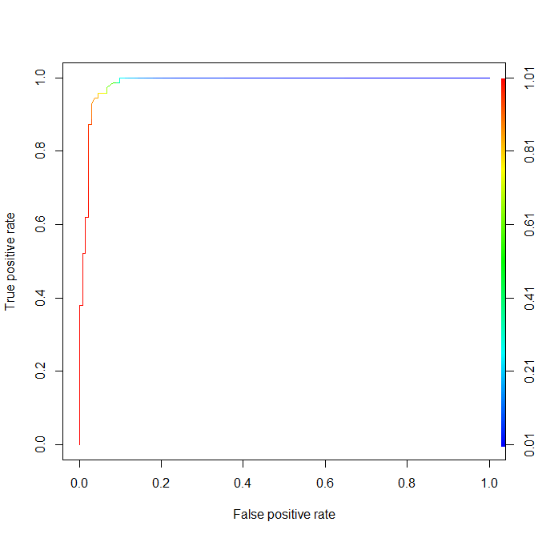
3 Naive Bayes Classifier
We are going to look at:
- What is conditional probability?
- Bayes rules
- Naive Bayes
- Gaussian Naive Bayes
- Implemeting in R
3.1 Conditional probability
When we speak about the probability of A given B, this is equivalent to calculating the probability of A occurring knowing that B has already occured \(P(A|B)\). Numeric example below:
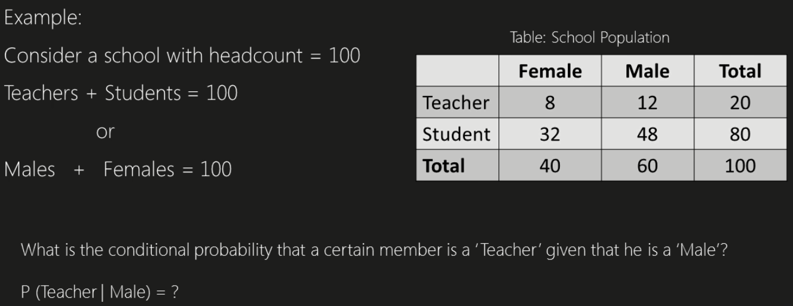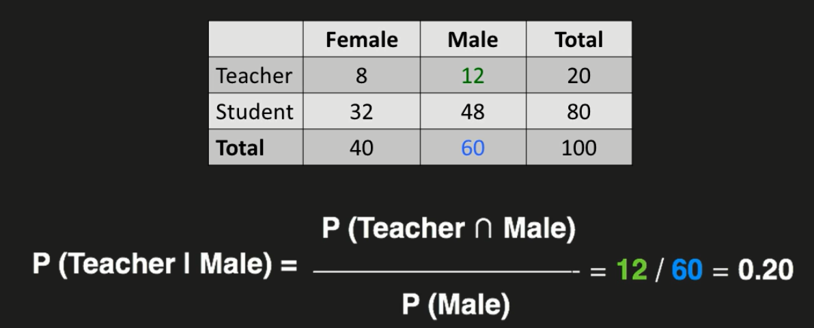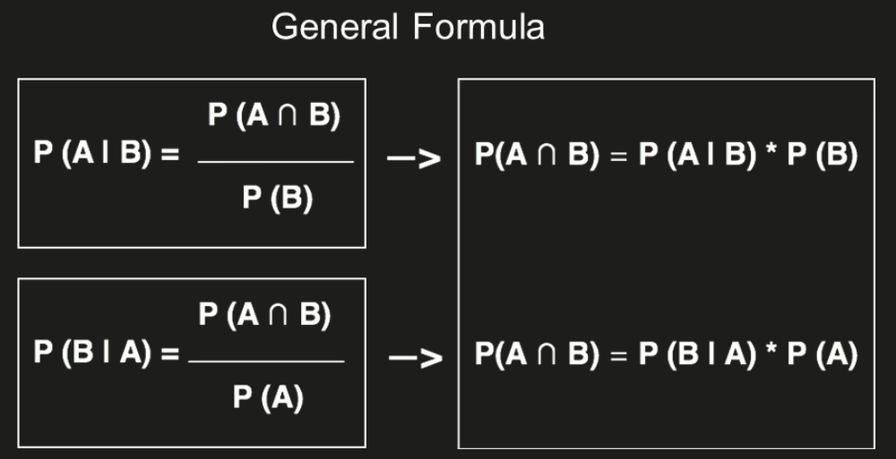
3.2 Bayes Rules
From the conditional probability notation, we can derive Bayes rule. It is basically a way of calculating the unknown from the known.
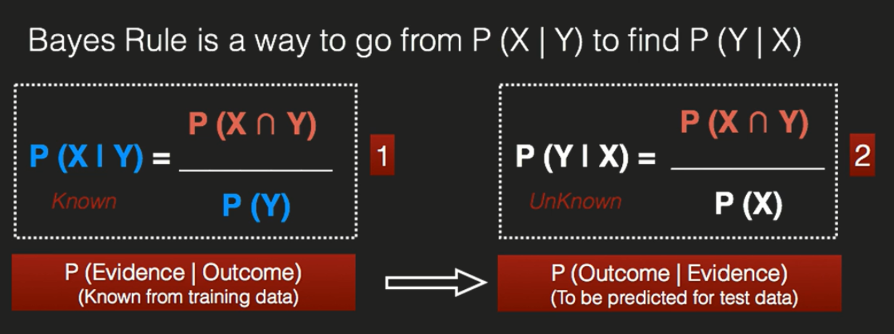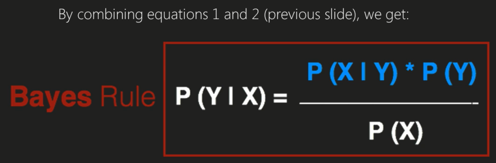
3.3 Naive Bayes
In real world problems, we typically have multiple X variables. It is called Naive because of the naive assumption that the X variales are all independent. If they were independent, we could extend the Bayes formula to what you can observe below. Just always bare in mind that the X variable are not usually all indepedent.
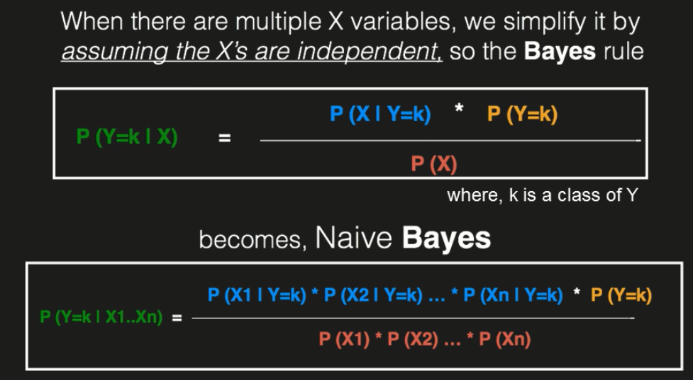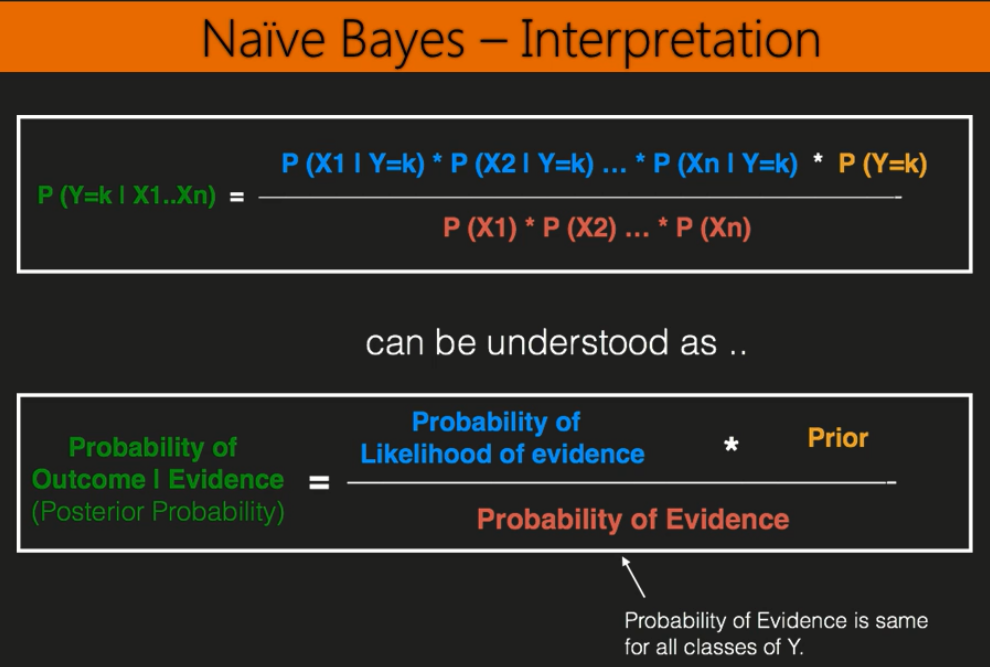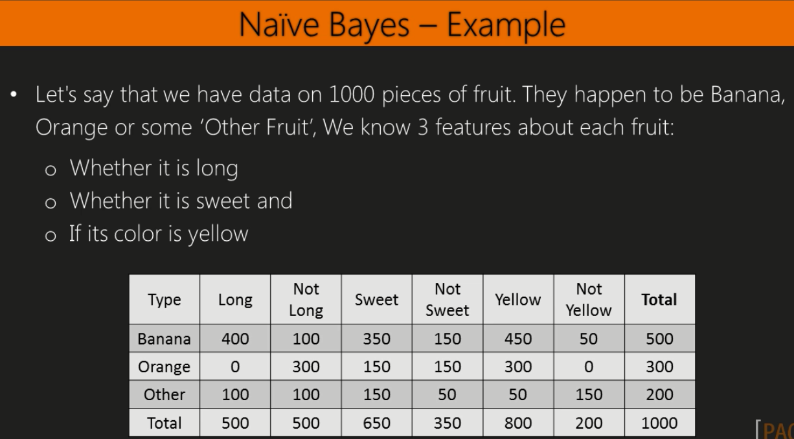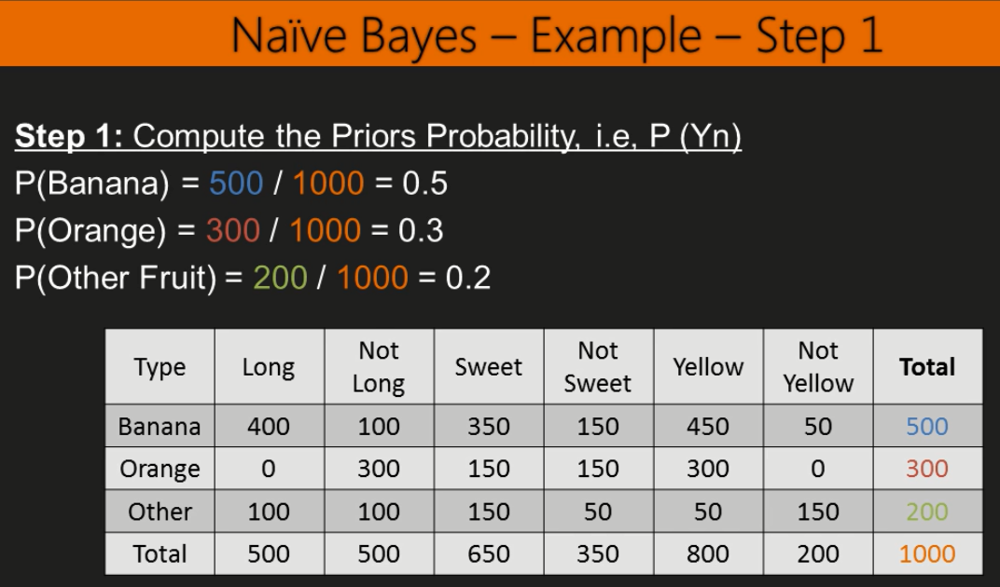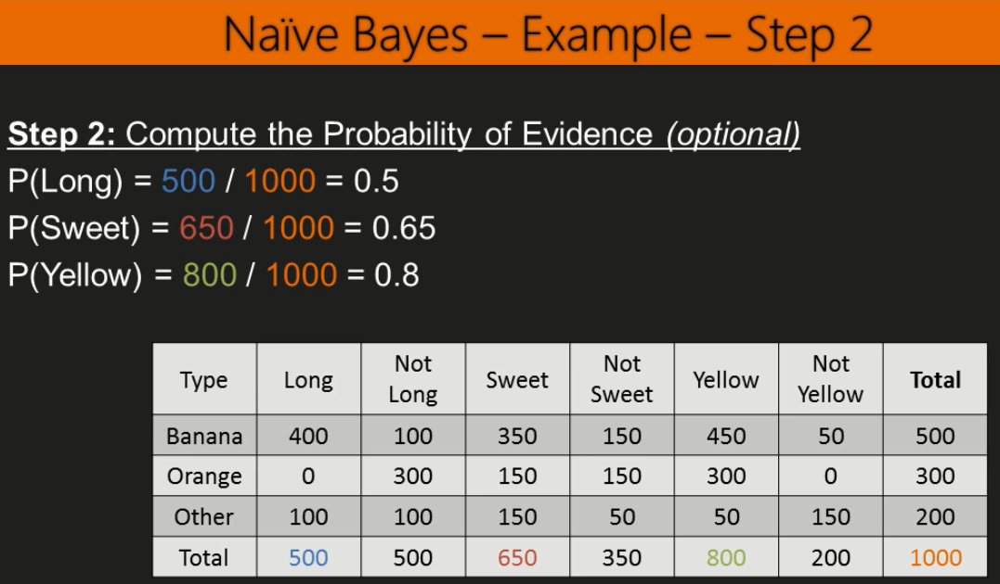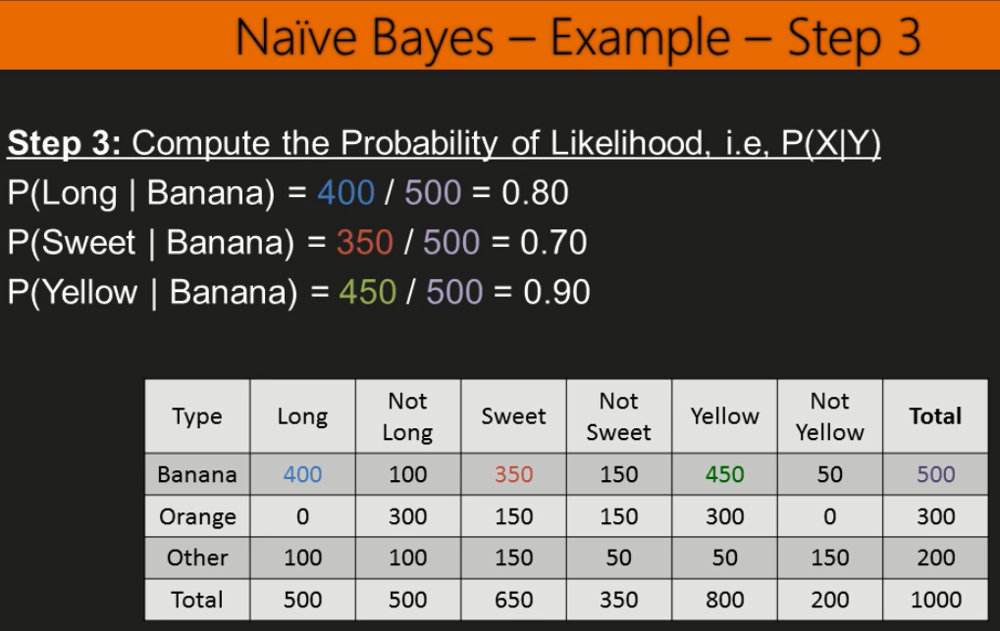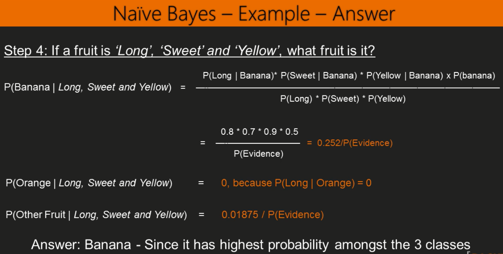
3.4 Gaussian Naive Bayes
So far we have shown how would we use Naive Bayes to predict a class with multiple options. But how do we compute probabilities when the X variable is continuous?
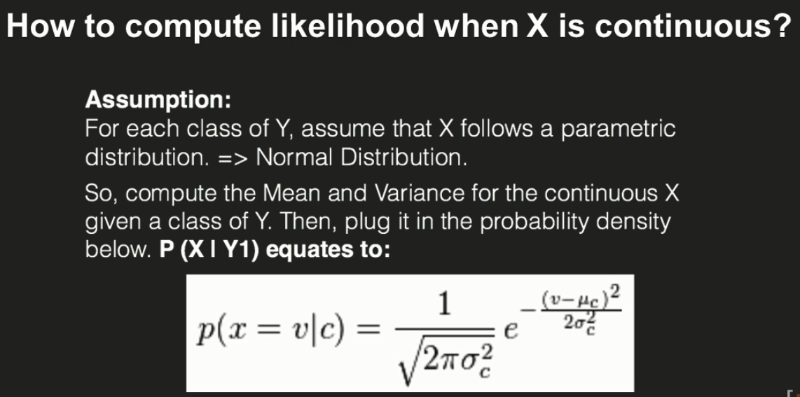
3.5 Implemeting in R
3.5.1 Loading the data
data(Vehicle, package = "mlbench")
str(Vehicle)## 'data.frame': 846 obs. of 19 variables:
## $ Comp : num 95 91 104 93 85 107 97 90 86 93 ...
## $ Circ : num 48 41 50 41 44 57 43 43 34 44 ...
## $ D.Circ : num 83 84 106 82 70 106 73 66 62 98 ...
## $ Rad.Ra : num 178 141 209 159 205 172 173 157 140 197 ...
## $ Pr.Axis.Ra : num 72 57 66 63 103 50 65 65 61 62 ...
## $ Max.L.Ra : num 10 9 10 9 52 6 6 9 7 11 ...
## $ Scat.Ra : num 162 149 207 144 149 255 153 137 122 183 ...
## $ Elong : num 42 45 32 46 45 26 42 48 54 36 ...
## $ Pr.Axis.Rect: num 20 19 23 19 19 28 19 18 17 22 ...
## $ Max.L.Rect : num 159 143 158 143 144 169 143 146 127 146 ...
## $ Sc.Var.Maxis: num 176 170 223 160 241 280 176 162 141 202 ...
## $ Sc.Var.maxis: num 379 330 635 309 325 957 361 281 223 505 ...
## $ Ra.Gyr : num 184 158 220 127 188 264 172 164 112 152 ...
## $ Skew.Maxis : num 70 72 73 63 127 85 66 67 64 64 ...
## $ Skew.maxis : num 6 9 14 6 9 5 13 3 2 4 ...
## $ Kurt.maxis : num 16 14 9 10 11 9 1 3 14 14 ...
## $ Kurt.Maxis : num 187 189 188 199 180 181 200 193 200 195 ...
## $ Holl.Ra : num 197 199 196 207 183 183 204 202 208 204 ...
## $ Class : Factor w/ 4 levels "bus","opel","saab",..: 4 4 3 4 1 1 1 4 4 3 ...summary(Vehicle)## Comp Circ D.Circ Rad.Ra Pr.Axis.Ra Max.L.Ra Scat.Ra Elong Pr.Axis.Rect Max.L.Rect Sc.Var.Maxis Sc.Var.maxis Ra.Gyr Skew.Maxis Skew.maxis
## Min. : 73.00 Min. :33.00 Min. : 40.00 Min. :104.0 Min. : 47.00 Min. : 2.000 Min. :112.0 Min. :26.00 Min. :17.00 Min. :118 Min. :130.0 Min. : 184.0 Min. :109.0 Min. : 59.00 Min. : 0.000
## 1st Qu.: 87.00 1st Qu.:40.00 1st Qu.: 70.00 1st Qu.:141.0 1st Qu.: 57.00 1st Qu.: 7.000 1st Qu.:146.2 1st Qu.:33.00 1st Qu.:19.00 1st Qu.:137 1st Qu.:167.0 1st Qu.: 318.2 1st Qu.:149.0 1st Qu.: 67.00 1st Qu.: 2.000
## Median : 93.00 Median :44.00 Median : 80.00 Median :167.0 Median : 61.00 Median : 8.000 Median :157.0 Median :43.00 Median :20.00 Median :146 Median :178.5 Median : 364.0 Median :173.0 Median : 71.50 Median : 6.000
## Mean : 93.68 Mean :44.86 Mean : 82.09 Mean :168.9 Mean : 61.69 Mean : 8.567 Mean :168.8 Mean :40.93 Mean :20.58 Mean :148 Mean :188.6 Mean : 439.9 Mean :174.7 Mean : 72.46 Mean : 6.377
## 3rd Qu.:100.00 3rd Qu.:49.00 3rd Qu.: 98.00 3rd Qu.:195.0 3rd Qu.: 65.00 3rd Qu.:10.000 3rd Qu.:198.0 3rd Qu.:46.00 3rd Qu.:23.00 3rd Qu.:159 3rd Qu.:217.0 3rd Qu.: 587.0 3rd Qu.:198.0 3rd Qu.: 75.00 3rd Qu.: 9.000
## Max. :119.00 Max. :59.00 Max. :112.00 Max. :333.0 Max. :138.00 Max. :55.000 Max. :265.0 Max. :61.00 Max. :29.00 Max. :188 Max. :320.0 Max. :1018.0 Max. :268.0 Max. :135.00 Max. :22.000
## Kurt.maxis Kurt.Maxis Holl.Ra Class
## Min. : 0.0 Min. :176.0 Min. :181.0 bus :218
## 1st Qu.: 5.0 1st Qu.:184.0 1st Qu.:190.2 opel:212
## Median :11.0 Median :188.0 Median :197.0 saab:217
## Mean :12.6 Mean :188.9 Mean :195.6 van :199
## 3rd Qu.:19.0 3rd Qu.:193.0 3rd Qu.:201.0
## Max. :41.0 Max. :206.0 Max. :211.03.5.2 Small checks on the data - featurePlot
Usually, the useful feature is the one that has significant shifts in the mean value across the different classes. Think it the other way round, if all vehicle classes output the same mean for a variable, then that variable is not going to be very helpful in differentiating amongst the cars. In the plot below you can check Sc.Var.maxis is a good candidate variable.
featurePlot(Vehicle[,-19], Vehicle[,19], plot = "box")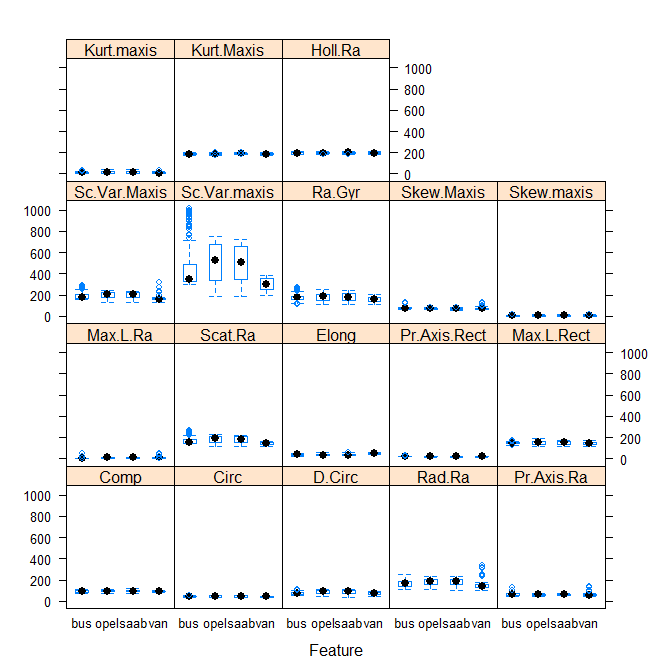
3.5.3 Sampling the data
set.seed(100)
train_rows = createDataPartition(Vehicle$Class, p = 0.7, list = F)
train = Vehicle[train_rows, ]
test = Vehicle[-train_rows, ]3.5.4 Train the model with Naive Bayes
library(klaR)
nb_mod = NaiveBayes(Class ~ ., data = train)
pred = predict(nb_mod, test)## Warning in FUN(X[[i]], ...): Numerical 0 probability for all classes with observation 1## Warning in FUN(X[[i]], ...): Numerical 0 probability for all classes with observation 2## Warning in FUN(X[[i]], ...): Numerical 0 probability for all classes with observation 3## Warning in FUN(X[[i]], ...): Numerical 0 probability for all classes with observation 4## Warning in FUN(X[[i]], ...): Numerical 0 probability for all classes with observation 5## Warning in FUN(X[[i]], ...): Numerical 0 probability for all classes with observation 6## Warning in FUN(X[[i]], ...): Numerical 0 probability for all classes with observation 7## Warning in FUN(X[[i]], ...): Numerical 0 probability for all classes with observation 8## Warning in FUN(X[[i]], ...): Numerical 0 probability for all classes with observation 9## Warning in FUN(X[[i]], ...): Numerical 0 probability for all classes with observation 10## Warning in FUN(X[[i]], ...): Numerical 0 probability for all classes with observation 11## Warning in FUN(X[[i]], ...): Numerical 0 probability for all classes with observation 12## Warning in FUN(X[[i]], ...): Numerical 0 probability for all classes with observation 13## Warning in FUN(X[[i]], ...): Numerical 0 probability for all classes with observation 14## Warning in FUN(X[[i]], ...): Numerical 0 probability for all classes with observation 15## Warning in FUN(X[[i]], ...): Numerical 0 probability for all classes with observation 16## Warning in FUN(X[[i]], ...): Numerical 0 probability for all classes with observation 17## Warning in FUN(X[[i]], ...): Numerical 0 probability for all classes with observation 18## Warning in FUN(X[[i]], ...): Numerical 0 probability for all classes with observation 19## Warning in FUN(X[[i]], ...): Numerical 0 probability for all classes with observation 20## Warning in FUN(X[[i]], ...): Numerical 0 probability for all classes with observation 21## Warning in FUN(X[[i]], ...): Numerical 0 probability for all classes with observation 22## Warning in FUN(X[[i]], ...): Numerical 0 probability for all classes with observation 23## Warning in FUN(X[[i]], ...): Numerical 0 probability for all classes with observation 24## Warning in FUN(X[[i]], ...): Numerical 0 probability for all classes with observation 25## Warning in FUN(X[[i]], ...): Numerical 0 probability for all classes with observation 26## Warning in FUN(X[[i]], ...): Numerical 0 probability for all classes with observation 27## Warning in FUN(X[[i]], ...): Numerical 0 probability for all classes with observation 28## Warning in FUN(X[[i]], ...): Numerical 0 probability for all classes with observation 29## Warning in FUN(X[[i]], ...): Numerical 0 probability for all classes with observation 30## Warning in FUN(X[[i]], ...): Numerical 0 probability for all classes with observation 31## Warning in FUN(X[[i]], ...): Numerical 0 probability for all classes with observation 32## Warning in FUN(X[[i]], ...): Numerical 0 probability for all classes with observation 33## Warning in FUN(X[[i]], ...): Numerical 0 probability for all classes with observation 34## Warning in FUN(X[[i]], ...): Numerical 0 probability for all classes with observation 35## Warning in FUN(X[[i]], ...): Numerical 0 probability for all classes with observation 36## Warning in FUN(X[[i]], ...): Numerical 0 probability for all classes with observation 37## Warning in FUN(X[[i]], ...): Numerical 0 probability for all classes with observation 38## Warning in FUN(X[[i]], ...): Numerical 0 probability for all classes with observation 39## Warning in FUN(X[[i]], ...): Numerical 0 probability for all classes with observation 40## Warning in FUN(X[[i]], ...): Numerical 0 probability for all classes with observation 41## Warning in FUN(X[[i]], ...): Numerical 0 probability for all classes with observation 42## Warning in FUN(X[[i]], ...): Numerical 0 probability for all classes with observation 43## Warning in FUN(X[[i]], ...): Numerical 0 probability for all classes with observation 44## Warning in FUN(X[[i]], ...): Numerical 0 probability for all classes with observation 45## Warning in FUN(X[[i]], ...): Numerical 0 probability for all classes with observation 46## Warning in FUN(X[[i]], ...): Numerical 0 probability for all classes with observation 47## Warning in FUN(X[[i]], ...): Numerical 0 probability for all classes with observation 48## Warning in FUN(X[[i]], ...): Numerical 0 probability for all classes with observation 49## Warning in FUN(X[[i]], ...): Numerical 0 probability for all classes with observation 50## Warning in FUN(X[[i]], ...): Numerical 0 probability for all classes with observation 51## Warning in FUN(X[[i]], ...): Numerical 0 probability for all classes with observation 52## Warning in FUN(X[[i]], ...): Numerical 0 probability for all classes with observation 53## Warning in FUN(X[[i]], ...): Numerical 0 probability for all classes with observation 54## Warning in FUN(X[[i]], ...): Numerical 0 probability for all classes with observation 55## Warning in FUN(X[[i]], ...): Numerical 0 probability for all classes with observation 56## Warning in FUN(X[[i]], ...): Numerical 0 probability for all classes with observation 57## Warning in FUN(X[[i]], ...): Numerical 0 probability for all classes with observation 58## Warning in FUN(X[[i]], ...): Numerical 0 probability for all classes with observation 59## Warning in FUN(X[[i]], ...): Numerical 0 probability for all classes with observation 60## Warning in FUN(X[[i]], ...): Numerical 0 probability for all classes with observation 61## Warning in FUN(X[[i]], ...): Numerical 0 probability for all classes with observation 62## Warning in FUN(X[[i]], ...): Numerical 0 probability for all classes with observation 63## Warning in FUN(X[[i]], ...): Numerical 0 probability for all classes with observation 64## Warning in FUN(X[[i]], ...): Numerical 0 probability for all classes with observation 65## Warning in FUN(X[[i]], ...): Numerical 0 probability for all classes with observation 66## Warning in FUN(X[[i]], ...): Numerical 0 probability for all classes with observation 67## Warning in FUN(X[[i]], ...): Numerical 0 probability for all classes with observation 68## Warning in FUN(X[[i]], ...): Numerical 0 probability for all classes with observation 69## Warning in FUN(X[[i]], ...): Numerical 0 probability for all classes with observation 70## Warning in FUN(X[[i]], ...): Numerical 0 probability for all classes with observation 71## Warning in FUN(X[[i]], ...): Numerical 0 probability for all classes with observation 72## Warning in FUN(X[[i]], ...): Numerical 0 probability for all classes with observation 73## Warning in FUN(X[[i]], ...): Numerical 0 probability for all classes with observation 74## Warning in FUN(X[[i]], ...): Numerical 0 probability for all classes with observation 75## Warning in FUN(X[[i]], ...): Numerical 0 probability for all classes with observation 76## Warning in FUN(X[[i]], ...): Numerical 0 probability for all classes with observation 77## Warning in FUN(X[[i]], ...): Numerical 0 probability for all classes with observation 78## Warning in FUN(X[[i]], ...): Numerical 0 probability for all classes with observation 79## Warning in FUN(X[[i]], ...): Numerical 0 probability for all classes with observation 80## Warning in FUN(X[[i]], ...): Numerical 0 probability for all classes with observation 81## Warning in FUN(X[[i]], ...): Numerical 0 probability for all classes with observation 82## Warning in FUN(X[[i]], ...): Numerical 0 probability for all classes with observation 83## Warning in FUN(X[[i]], ...): Numerical 0 probability for all classes with observation 84## Warning in FUN(X[[i]], ...): Numerical 0 probability for all classes with observation 85## Warning in FUN(X[[i]], ...): Numerical 0 probability for all classes with observation 86## Warning in FUN(X[[i]], ...): Numerical 0 probability for all classes with observation 87## Warning in FUN(X[[i]], ...): Numerical 0 probability for all classes with observation 88## Warning in FUN(X[[i]], ...): Numerical 0 probability for all classes with observation 89## Warning in FUN(X[[i]], ...): Numerical 0 probability for all classes with observation 90## Warning in FUN(X[[i]], ...): Numerical 0 probability for all classes with observation 91## Warning in FUN(X[[i]], ...): Numerical 0 probability for all classes with observation 92## Warning in FUN(X[[i]], ...): Numerical 0 probability for all classes with observation 93## Warning in FUN(X[[i]], ...): Numerical 0 probability for all classes with observation 94## Warning in FUN(X[[i]], ...): Numerical 0 probability for all classes with observation 95## Warning in FUN(X[[i]], ...): Numerical 0 probability for all classes with observation 96## Warning in FUN(X[[i]], ...): Numerical 0 probability for all classes with observation 97## Warning in FUN(X[[i]], ...): Numerical 0 probability for all classes with observation 98## Warning in FUN(X[[i]], ...): Numerical 0 probability for all classes with observation 99## Warning in FUN(X[[i]], ...): Numerical 0 probability for all classes with observation 100## Warning in FUN(X[[i]], ...): Numerical 0 probability for all classes with observation 101## Warning in FUN(X[[i]], ...): Numerical 0 probability for all classes with observation 102## Warning in FUN(X[[i]], ...): Numerical 0 probability for all classes with observation 103## Warning in FUN(X[[i]], ...): Numerical 0 probability for all classes with observation 104## Warning in FUN(X[[i]], ...): Numerical 0 probability for all classes with observation 105## Warning in FUN(X[[i]], ...): Numerical 0 probability for all classes with observation 106## Warning in FUN(X[[i]], ...): Numerical 0 probability for all classes with observation 107## Warning in FUN(X[[i]], ...): Numerical 0 probability for all classes with observation 108## Warning in FUN(X[[i]], ...): Numerical 0 probability for all classes with observation 109## Warning in FUN(X[[i]], ...): Numerical 0 probability for all classes with observation 110## Warning in FUN(X[[i]], ...): Numerical 0 probability for all classes with observation 111## Warning in FUN(X[[i]], ...): Numerical 0 probability for all classes with observation 112## Warning in FUN(X[[i]], ...): Numerical 0 probability for all classes with observation 113## Warning in FUN(X[[i]], ...): Numerical 0 probability for all classes with observation 114## Warning in FUN(X[[i]], ...): Numerical 0 probability for all classes with observation 115## Warning in FUN(X[[i]], ...): Numerical 0 probability for all classes with observation 116## Warning in FUN(X[[i]], ...): Numerical 0 probability for all classes with observation 117## Warning in FUN(X[[i]], ...): Numerical 0 probability for all classes with observation 118## Warning in FUN(X[[i]], ...): Numerical 0 probability for all classes with observation 119## Warning in FUN(X[[i]], ...): Numerical 0 probability for all classes with observation 120## Warning in FUN(X[[i]], ...): Numerical 0 probability for all classes with observation 121## Warning in FUN(X[[i]], ...): Numerical 0 probability for all classes with observation 122## Warning in FUN(X[[i]], ...): Numerical 0 probability for all classes with observation 123## Warning in FUN(X[[i]], ...): Numerical 0 probability for all classes with observation 124## Warning in FUN(X[[i]], ...): Numerical 0 probability for all classes with observation 125## Warning in FUN(X[[i]], ...): Numerical 0 probability for all classes with observation 126## Warning in FUN(X[[i]], ...): Numerical 0 probability for all classes with observation 127## Warning in FUN(X[[i]], ...): Numerical 0 probability for all classes with observation 128## Warning in FUN(X[[i]], ...): Numerical 0 probability for all classes with observation 129## Warning in FUN(X[[i]], ...): Numerical 0 probability for all classes with observation 130## Warning in FUN(X[[i]], ...): Numerical 0 probability for all classes with observation 131## Warning in FUN(X[[i]], ...): Numerical 0 probability for all classes with observation 132## Warning in FUN(X[[i]], ...): Numerical 0 probability for all classes with observation 133## Warning in FUN(X[[i]], ...): Numerical 0 probability for all classes with observation 134## Warning in FUN(X[[i]], ...): Numerical 0 probability for all classes with observation 135## Warning in FUN(X[[i]], ...): Numerical 0 probability for all classes with observation 136## Warning in FUN(X[[i]], ...): Numerical 0 probability for all classes with observation 137## Warning in FUN(X[[i]], ...): Numerical 0 probability for all classes with observation 138## Warning in FUN(X[[i]], ...): Numerical 0 probability for all classes with observation 139## Warning in FUN(X[[i]], ...): Numerical 0 probability for all classes with observation 140## Warning in FUN(X[[i]], ...): Numerical 0 probability for all classes with observation 141## Warning in FUN(X[[i]], ...): Numerical 0 probability for all classes with observation 142## Warning in FUN(X[[i]], ...): Numerical 0 probability for all classes with observation 143## Warning in FUN(X[[i]], ...): Numerical 0 probability for all classes with observation 144## Warning in FUN(X[[i]], ...): Numerical 0 probability for all classes with observation 145## Warning in FUN(X[[i]], ...): Numerical 0 probability for all classes with observation 146## Warning in FUN(X[[i]], ...): Numerical 0 probability for all classes with observation 147## Warning in FUN(X[[i]], ...): Numerical 0 probability for all classes with observation 148## Warning in FUN(X[[i]], ...): Numerical 0 probability for all classes with observation 149## Warning in FUN(X[[i]], ...): Numerical 0 probability for all classes with observation 150## Warning in FUN(X[[i]], ...): Numerical 0 probability for all classes with observation 151## Warning in FUN(X[[i]], ...): Numerical 0 probability for all classes with observation 152## Warning in FUN(X[[i]], ...): Numerical 0 probability for all classes with observation 153## Warning in FUN(X[[i]], ...): Numerical 0 probability for all classes with observation 154## Warning in FUN(X[[i]], ...): Numerical 0 probability for all classes with observation 155## Warning in FUN(X[[i]], ...): Numerical 0 probability for all classes with observation 156## Warning in FUN(X[[i]], ...): Numerical 0 probability for all classes with observation 157## Warning in FUN(X[[i]], ...): Numerical 0 probability for all classes with observation 158## Warning in FUN(X[[i]], ...): Numerical 0 probability for all classes with observation 159## Warning in FUN(X[[i]], ...): Numerical 0 probability for all classes with observation 160## Warning in FUN(X[[i]], ...): Numerical 0 probability for all classes with observation 161## Warning in FUN(X[[i]], ...): Numerical 0 probability for all classes with observation 162## Warning in FUN(X[[i]], ...): Numerical 0 probability for all classes with observation 163## Warning in FUN(X[[i]], ...): Numerical 0 probability for all classes with observation 164## Warning in FUN(X[[i]], ...): Numerical 0 probability for all classes with observation 165## Warning in FUN(X[[i]], ...): Numerical 0 probability for all classes with observation 166## Warning in FUN(X[[i]], ...): Numerical 0 probability for all classes with observation 167## Warning in FUN(X[[i]], ...): Numerical 0 probability for all classes with observation 168## Warning in FUN(X[[i]], ...): Numerical 0 probability for all classes with observation 169## Warning in FUN(X[[i]], ...): Numerical 0 probability for all classes with observation 170## Warning in FUN(X[[i]], ...): Numerical 0 probability for all classes with observation 171## Warning in FUN(X[[i]], ...): Numerical 0 probability for all classes with observation 172## Warning in FUN(X[[i]], ...): Numerical 0 probability for all classes with observation 173## Warning in FUN(X[[i]], ...): Numerical 0 probability for all classes with observation 174## Warning in FUN(X[[i]], ...): Numerical 0 probability for all classes with observation 175## Warning in FUN(X[[i]], ...): Numerical 0 probability for all classes with observation 176## Warning in FUN(X[[i]], ...): Numerical 0 probability for all classes with observation 177## Warning in FUN(X[[i]], ...): Numerical 0 probability for all classes with observation 178## Warning in FUN(X[[i]], ...): Numerical 0 probability for all classes with observation 179## Warning in FUN(X[[i]], ...): Numerical 0 probability for all classes with observation 180## Warning in FUN(X[[i]], ...): Numerical 0 probability for all classes with observation 181## Warning in FUN(X[[i]], ...): Numerical 0 probability for all classes with observation 182## Warning in FUN(X[[i]], ...): Numerical 0 probability for all classes with observation 183## Warning in FUN(X[[i]], ...): Numerical 0 probability for all classes with observation 184## Warning in FUN(X[[i]], ...): Numerical 0 probability for all classes with observation 185## Warning in FUN(X[[i]], ...): Numerical 0 probability for all classes with observation 186## Warning in FUN(X[[i]], ...): Numerical 0 probability for all classes with observation 187## Warning in FUN(X[[i]], ...): Numerical 0 probability for all classes with observation 188## Warning in FUN(X[[i]], ...): Numerical 0 probability for all classes with observation 189## Warning in FUN(X[[i]], ...): Numerical 0 probability for all classes with observation 190## Warning in FUN(X[[i]], ...): Numerical 0 probability for all classes with observation 191## Warning in FUN(X[[i]], ...): Numerical 0 probability for all classes with observation 192## Warning in FUN(X[[i]], ...): Numerical 0 probability for all classes with observation 193## Warning in FUN(X[[i]], ...): Numerical 0 probability for all classes with observation 194## Warning in FUN(X[[i]], ...): Numerical 0 probability for all classes with observation 195## Warning in FUN(X[[i]], ...): Numerical 0 probability for all classes with observation 196## Warning in FUN(X[[i]], ...): Numerical 0 probability for all classes with observation 197## Warning in FUN(X[[i]], ...): Numerical 0 probability for all classes with observation 198## Warning in FUN(X[[i]], ...): Numerical 0 probability for all classes with observation 199## Warning in FUN(X[[i]], ...): Numerical 0 probability for all classes with observation 200## Warning in FUN(X[[i]], ...): Numerical 0 probability for all classes with observation 201## Warning in FUN(X[[i]], ...): Numerical 0 probability for all classes with observation 202## Warning in FUN(X[[i]], ...): Numerical 0 probability for all classes with observation 203## Warning in FUN(X[[i]], ...): Numerical 0 probability for all classes with observation 204## Warning in FUN(X[[i]], ...): Numerical 0 probability for all classes with observation 205## Warning in FUN(X[[i]], ...): Numerical 0 probability for all classes with observation 206## Warning in FUN(X[[i]], ...): Numerical 0 probability for all classes with observation 207## Warning in FUN(X[[i]], ...): Numerical 0 probability for all classes with observation 208## Warning in FUN(X[[i]], ...): Numerical 0 probability for all classes with observation 209## Warning in FUN(X[[i]], ...): Numerical 0 probability for all classes with observation 210## Warning in FUN(X[[i]], ...): Numerical 0 probability for all classes with observation 211## Warning in FUN(X[[i]], ...): Numerical 0 probability for all classes with observation 212## Warning in FUN(X[[i]], ...): Numerical 0 probability for all classes with observation 213## Warning in FUN(X[[i]], ...): Numerical 0 probability for all classes with observation 214## Warning in FUN(X[[i]], ...): Numerical 0 probability for all classes with observation 215## Warning in FUN(X[[i]], ...): Numerical 0 probability for all classes with observation 216## Warning in FUN(X[[i]], ...): Numerical 0 probability for all classes with observation 217## Warning in FUN(X[[i]], ...): Numerical 0 probability for all classes with observation 218## Warning in FUN(X[[i]], ...): Numerical 0 probability for all classes with observation 219## Warning in FUN(X[[i]], ...): Numerical 0 probability for all classes with observation 220## Warning in FUN(X[[i]], ...): Numerical 0 probability for all classes with observation 221## Warning in FUN(X[[i]], ...): Numerical 0 probability for all classes with observation 222## Warning in FUN(X[[i]], ...): Numerical 0 probability for all classes with observation 223## Warning in FUN(X[[i]], ...): Numerical 0 probability for all classes with observation 224## Warning in FUN(X[[i]], ...): Numerical 0 probability for all classes with observation 225## Warning in FUN(X[[i]], ...): Numerical 0 probability for all classes with observation 226## Warning in FUN(X[[i]], ...): Numerical 0 probability for all classes with observation 227## Warning in FUN(X[[i]], ...): Numerical 0 probability for all classes with observation 228## Warning in FUN(X[[i]], ...): Numerical 0 probability for all classes with observation 229## Warning in FUN(X[[i]], ...): Numerical 0 probability for all classes with observation 230## Warning in FUN(X[[i]], ...): Numerical 0 probability for all classes with observation 231## Warning in FUN(X[[i]], ...): Numerical 0 probability for all classes with observation 232## Warning in FUN(X[[i]], ...): Numerical 0 probability for all classes with observation 233## Warning in FUN(X[[i]], ...): Numerical 0 probability for all classes with observation 234## Warning in FUN(X[[i]], ...): Numerical 0 probability for all classes with observation 235## Warning in FUN(X[[i]], ...): Numerical 0 probability for all classes with observation 236## Warning in FUN(X[[i]], ...): Numerical 0 probability for all classes with observation 237## Warning in FUN(X[[i]], ...): Numerical 0 probability for all classes with observation 238## Warning in FUN(X[[i]], ...): Numerical 0 probability for all classes with observation 239## Warning in FUN(X[[i]], ...): Numerical 0 probability for all classes with observation 240## Warning in FUN(X[[i]], ...): Numerical 0 probability for all classes with observation 241## Warning in FUN(X[[i]], ...): Numerical 0 probability for all classes with observation 242## Warning in FUN(X[[i]], ...): Numerical 0 probability for all classes with observation 243## Warning in FUN(X[[i]], ...): Numerical 0 probability for all classes with observation 244## Warning in FUN(X[[i]], ...): Numerical 0 probability for all classes with observation 245## Warning in FUN(X[[i]], ...): Numerical 0 probability for all classes with observation 246## Warning in FUN(X[[i]], ...): Numerical 0 probability for all classes with observation 247## Warning in FUN(X[[i]], ...): Numerical 0 probability for all classes with observation 248## Warning in FUN(X[[i]], ...): Numerical 0 probability for all classes with observation 249## Warning in FUN(X[[i]], ...): Numerical 0 probability for all classes with observation 250## Warning in FUN(X[[i]], ...): Numerical 0 probability for all classes with observation 251## Warning in FUN(X[[i]], ...): Numerical 0 probability for all classes with observation 2523.5.5 Metrics
tab = table(pred$class, test$Class)
caret::confusionMatrix(tab)## Confusion Matrix and Statistics
##
##
## bus opel saab van
## bus 17 0 4 4
## opel 9 15 4 1
## saab 5 32 36 3
## van 34 16 21 51
##
## Overall Statistics
##
## Accuracy : 0.4722
## 95% CI : (0.4092, 0.5359)
## No Information Rate : 0.2579
## P-Value [Acc > NIR] : 0.000000000000218513
##
## Kappa : 0.3005
## Mcnemar's Test P-Value : 0.000000000000001917
##
## Statistics by Class:
##
## Class: bus Class: opel Class: saab Class: van
## Sensitivity 0.26154 0.23810 0.5538 0.8644
## Specificity 0.95722 0.92593 0.7861 0.6321
## Pos Pred Value 0.68000 0.51724 0.4737 0.4180
## Neg Pred Value 0.78855 0.78475 0.8352 0.9385
## Prevalence 0.25794 0.25000 0.2579 0.2341
## Detection Rate 0.06746 0.05952 0.1429 0.2024
## Detection Prevalence 0.09921 0.11508 0.3016 0.4841
## Balanced Accuracy 0.60938 0.58201 0.6700 0.74833.5.6 Plot naive bayes
The following plots show the distribution of the different classes for the different variables. The more separate the distribution lines are, the more useful the variable is.
plot(nb_mod)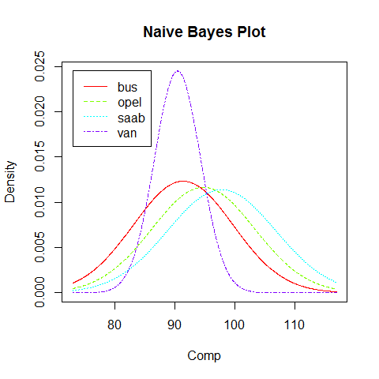 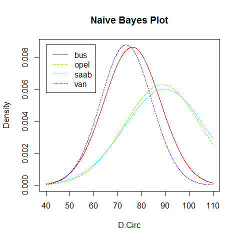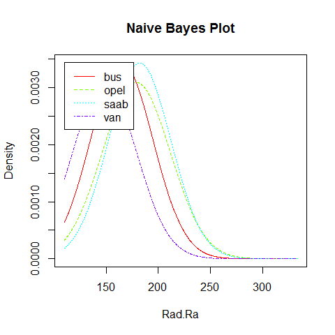
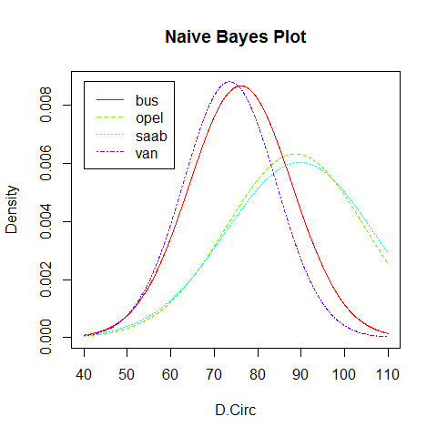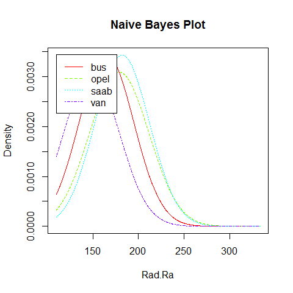 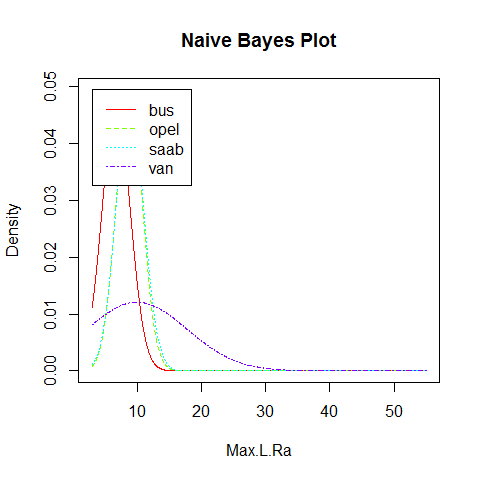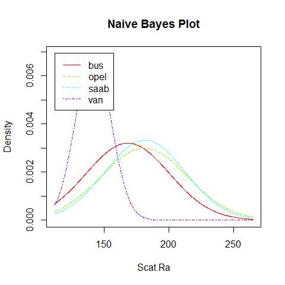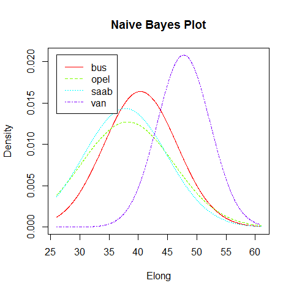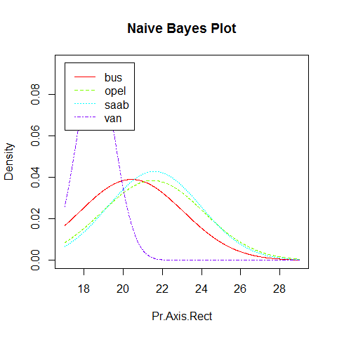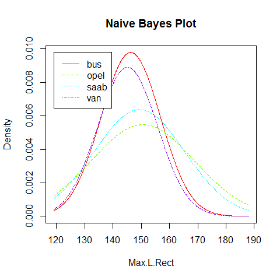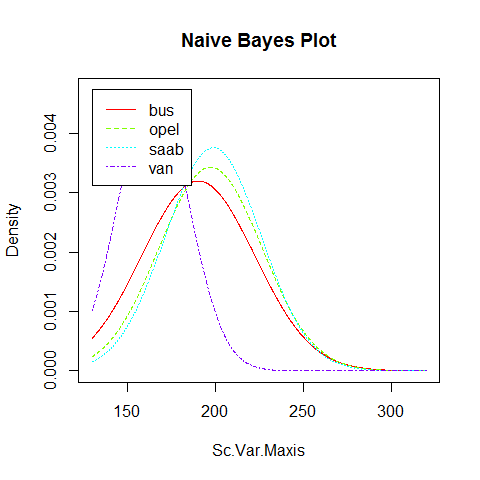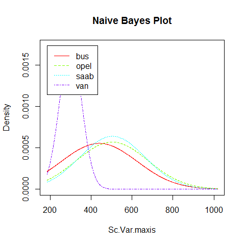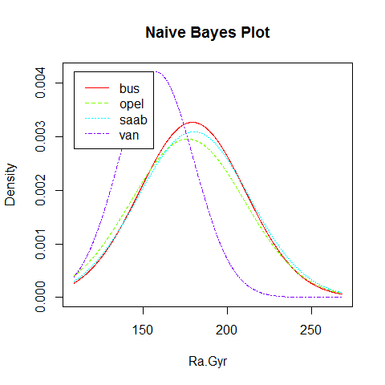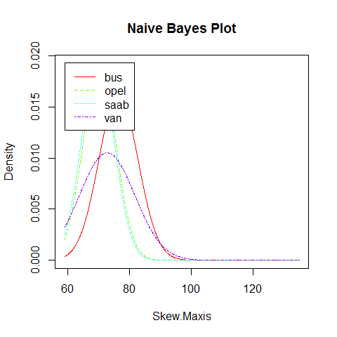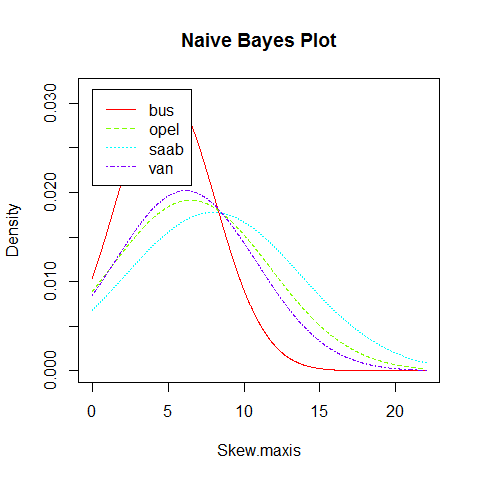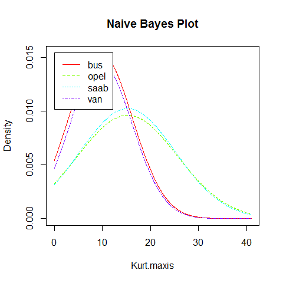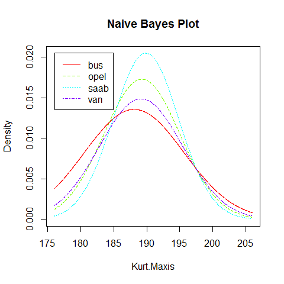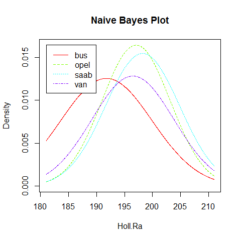
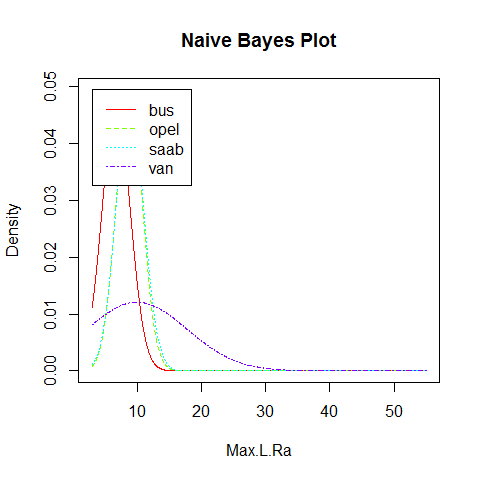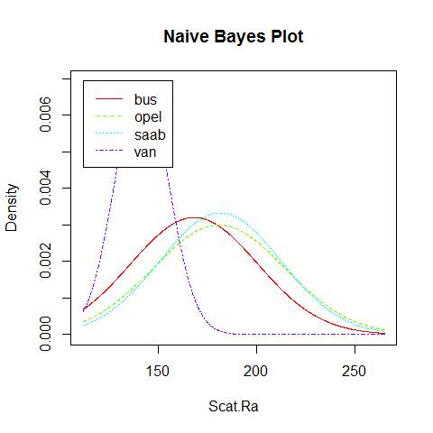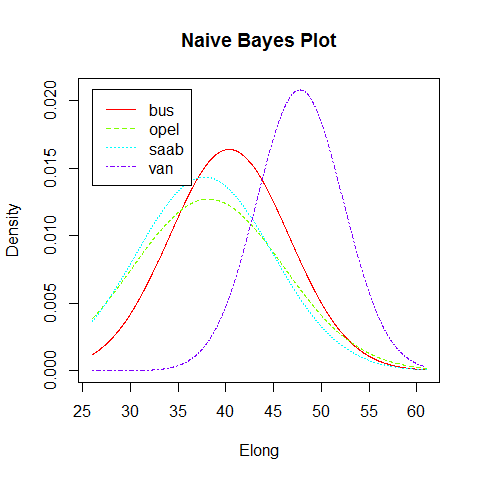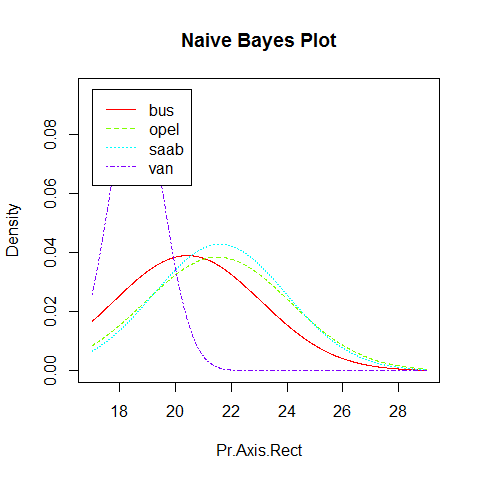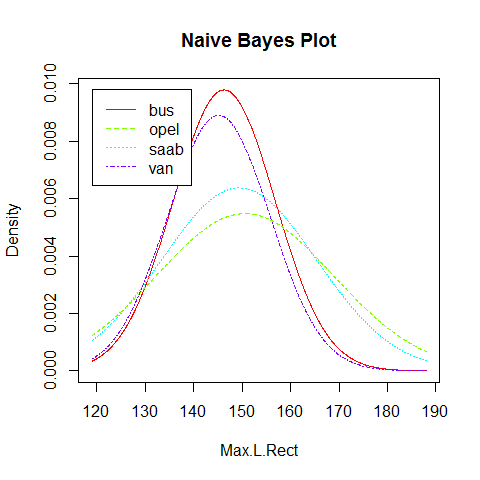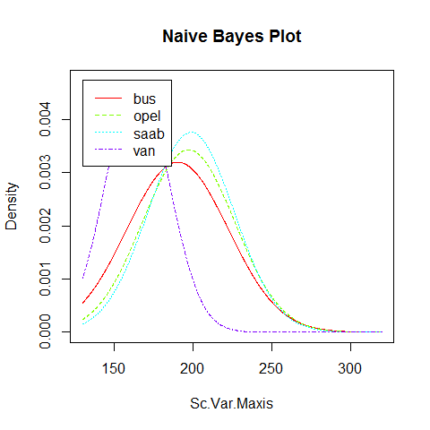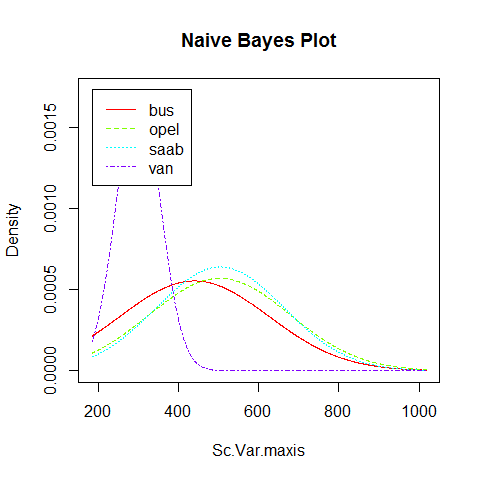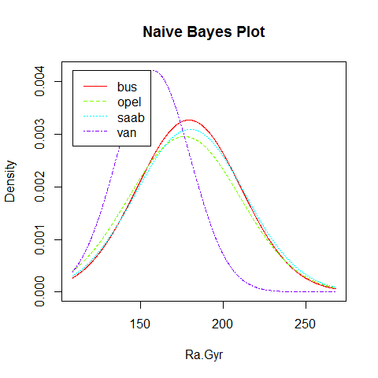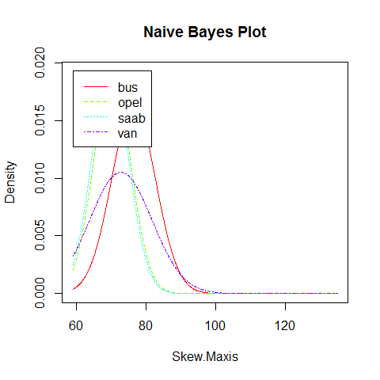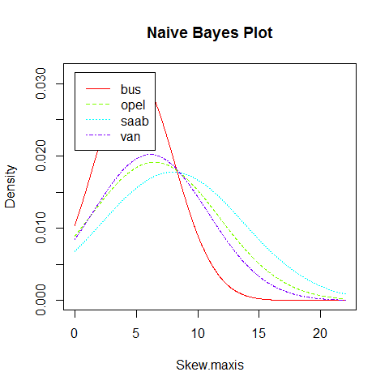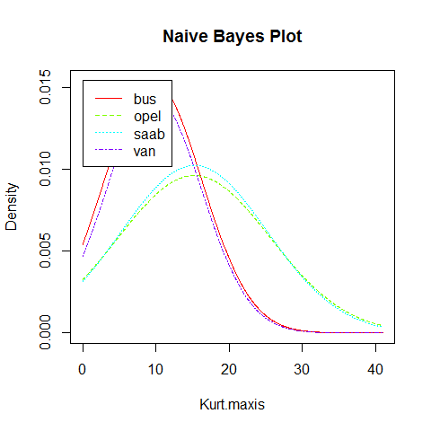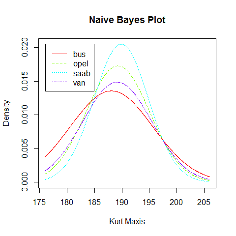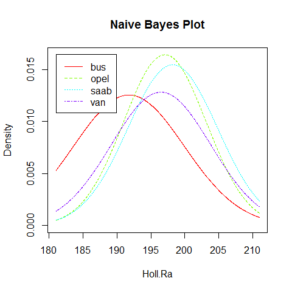
4 KNN - k Nearest Neighbours
We are going to learn about
- Steps for kNN
- Distance matrix
- Normalization
- k-NN for classification
- k-NN for regression
- Implementation in R
4.1 Steps for kNN
kNN is a machine learning algorithm that can predict both categorial and continuous variables. It predicts the value of a record based on the information of it’s neighbours. Predicting the class of a data point happens in 5 steps:
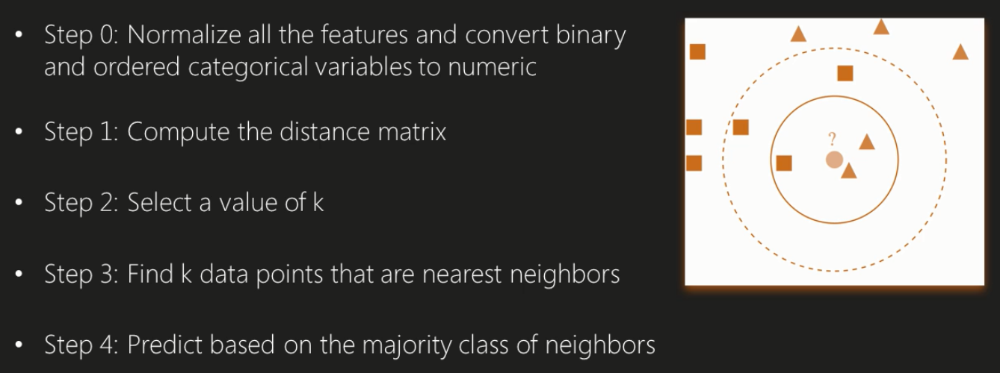
4.2 Distance matrix
Distances can be calculated with several measures. Some of them are shown below. Regardless of which one you choose, we need to calculate a matrix of distances which represents, for each record, the distance to all other records.
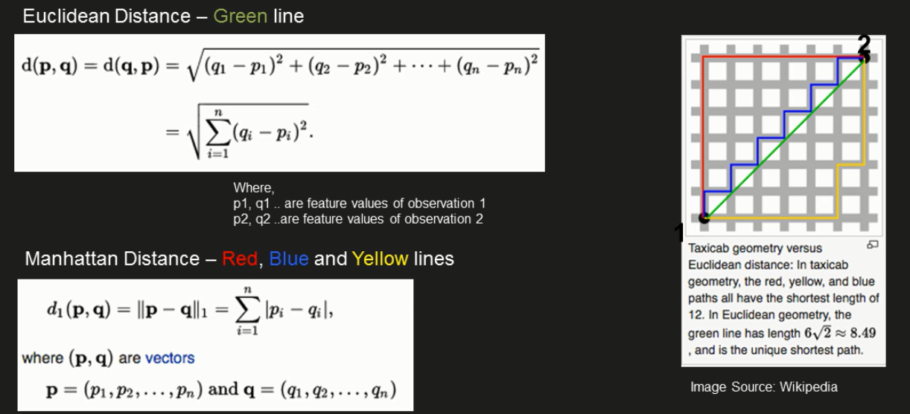
data("iris")
head(iris)## Sepal.Length Sepal.Width Petal.Length Petal.Width Species
## 1 5.1 3.5 1.4 0.2 setosa
## 2 4.9 3.0 1.4 0.2 setosa
## 3 4.7 3.2 1.3 0.2 setosa
## 4 4.6 3.1 1.5 0.2 setosa
## 5 5.0 3.6 1.4 0.2 setosa
## 6 5.4 3.9 1.7 0.4 setosa4.2.1 Calculating in R
# Euclidean Distance matrix - the first 10 rows using the values of the first 4 columns
data(iris)
class(iris)## [1] "data.frame"d1 = dist(iris[1:10,c(1:4)])
d1## 1 2 3 4 5 6 7 8 9
## 2 0.5385165
## 3 0.5099020 0.3000000
## 4 0.6480741 0.3316625 0.2449490
## 5 0.1414214 0.6082763 0.5099020 0.6480741
## 6 0.6164414 1.0908712 1.0862780 1.1661904 0.6164414
## 7 0.5196152 0.5099020 0.2645751 0.3316625 0.4582576 0.9949874
## 8 0.1732051 0.4242641 0.4123106 0.5000000 0.2236068 0.7000000 0.4242641
## 9 0.9219544 0.5099020 0.4358899 0.3000000 0.9219544 1.4594520 0.5477226 0.7874008
## 10 0.4690416 0.1732051 0.3162278 0.3162278 0.5291503 1.0099505 0.4795832 0.3316625 0.5567764# As an example of how this is calculated
iris[1:2,]## Sepal.Length Sepal.Width Petal.Length Petal.Width Species
## 1 5.1 3.5 1.4 0.2 setosa
## 2 4.9 3.0 1.4 0.2 setosasqrt(((5.1-4.9)^2 + (3.5-3.0)^2 + (1.4-1.4)^2 + (0.2-0.2)^2))## [1] 0.5385165We can answer this question with the distance matrix. As an example, for the first record we see that record 5 and 8 are quite close compared to the other records.
So, taking it back to one of the steps in kNN:
- Remember we specify k. Let’s say k = 3.
- The classification output for the first record will be the majority or average class of the 3 nearest records.
4.3 Normalization
It is important to normalize before taking any further action. This is because, if we have variables that have different orders of magnitude, they will skew the end classification. We need to bring them to an equivalent order. There are many ways to normalise record, but let’s add a simple way of doing so, which is to chane the range so that all features are between 0 and 1.
normalize = function(x){return((x-min(x))/(max(x)-min(x)))}
normalized_iris = lapply(iris[,-5], normalize)
iris_n = data.frame(normalized_iris, Species = iris[,5])
summary(iris_n)## Sepal.Length Sepal.Width Petal.Length Petal.Width Species
## Min. :0.0000 Min. :0.0000 Min. :0.0000 Min. :0.00000 setosa :50
## 1st Qu.:0.2222 1st Qu.:0.3333 1st Qu.:0.1017 1st Qu.:0.08333 versicolor:50
## Median :0.4167 Median :0.4167 Median :0.5678 Median :0.50000 virginica :50
## Mean :0.4287 Mean :0.4406 Mean :0.4675 Mean :0.45806
## 3rd Qu.:0.5833 3rd Qu.:0.5417 3rd Qu.:0.6949 3rd Qu.:0.70833
## Max. :1.0000 Max. :1.0000 Max. :1.0000 Max. :1.000004.3.1 Recalculating distances after normalization
As you can see, the neighbours have now changed. This is why normalization is so important! We don’t want variables that have a higher magnitude have a higher impact just because of so. We want them to be important regardless of their order of magnitude.
d2 = dist(iris_n[1:10,c(1:4)])
d2## 1 2 3 4 5 6 7 8 9
## 2 0.21561354
## 3 0.16810102 0.10157824
## 4 0.21761244 0.09469862 0.06047157
## 5 0.05007710 0.25153848 0.18710825 0.23671867
## 6 0.21036190 0.41163701 0.36663185 0.41059392 0.19365068
## 7 0.15087195 0.19094065 0.09868857 0.13284722 0.14500426 0.31162007
## 8 0.05286766 0.16981359 0.12262946 0.16724437 0.08503951 0.25266974 0.11987103
## 9 0.31671540 0.14500426 0.15118438 0.10157824 0.33592741 0.51019752 0.21960262 0.26733468
## 10 0.18134934 0.06131473 0.08779372 0.09316950 0.21493666 0.38363437 0.17263013 0.13465777 0.168101024.4 kNN for classification
# Split the data
set.seed(100)
train_rows = createDataPartition(iris_n$Species, p = 0.7, list = F)
train = iris_n[train_rows, ]
test = iris_n[-train_rows, ]
# Build the model
fit = caret::knn3(train[, -5], train[, 5], k = 5)
# Make predictions
predictions = predict(fit, test[, -5], type = "class")
tab = table(predictions, test$Species)
caret::confusionMatrix(tab)## Confusion Matrix and Statistics
##
##
## predictions setosa versicolor virginica
## setosa 15 0 0
## versicolor 0 13 0
## virginica 0 2 15
##
## Overall Statistics
##
## Accuracy : 0.9556
## 95% CI : (0.8485, 0.9946)
## No Information Rate : 0.3333
## P-Value [Acc > NIR] : < 0.00000000000000022
##
## Kappa : 0.9333
## Mcnemar's Test P-Value : NA
##
## Statistics by Class:
##
## Class: setosa Class: versicolor Class: virginica
## Sensitivity 1.0000 0.8667 1.0000
## Specificity 1.0000 1.0000 0.9333
## Pos Pred Value 1.0000 1.0000 0.8824
## Neg Pred Value 1.0000 0.9375 1.0000
## Prevalence 0.3333 0.3333 0.3333
## Detection Rate 0.3333 0.2889 0.3333
## Detection Prevalence 0.3333 0.2889 0.3778
## Balanced Accuracy 1.0000 0.9333 0.96674.5 kNN for continuous variables
# Get the data
data(Boston, package = "MASS")
head(Boston)## crim zn indus chas nox rm age dis rad tax ptratio black lstat medv
## 1 0.00632 18 2.31 0 0.538 6.575 65.2 4.0900 1 296 15.3 396.90 4.98 24.0
## 2 0.02731 0 7.07 0 0.469 6.421 78.9 4.9671 2 242 17.8 396.90 9.14 21.6
## 3 0.02729 0 7.07 0 0.469 7.185 61.1 4.9671 2 242 17.8 392.83 4.03 34.7
## 4 0.03237 0 2.18 0 0.458 6.998 45.8 6.0622 3 222 18.7 394.63 2.94 33.4
## 5 0.06905 0 2.18 0 0.458 7.147 54.2 6.0622 3 222 18.7 396.90 5.33 36.2
## 6 0.02985 0 2.18 0 0.458 6.430 58.7 6.0622 3 222 18.7 394.12 5.21 28.7# Split the data
set.seed(100)
train_rows = createDataPartition(Boston$medv, p = 0.7, list = F)
train = Boston[train_rows, ]
test = Boston[-train_rows, ]
# Build the model
fit = caret::knnreg(train[, -14], train[, 14], k = 5)
# Make predictions
predictions = predict(fit, test[, -5], type = "class")
DMwR::regr.eval(test$medv, predictions)## mae mse rmse mape
## 7.5913556 108.1100294 10.3975973 0.3187053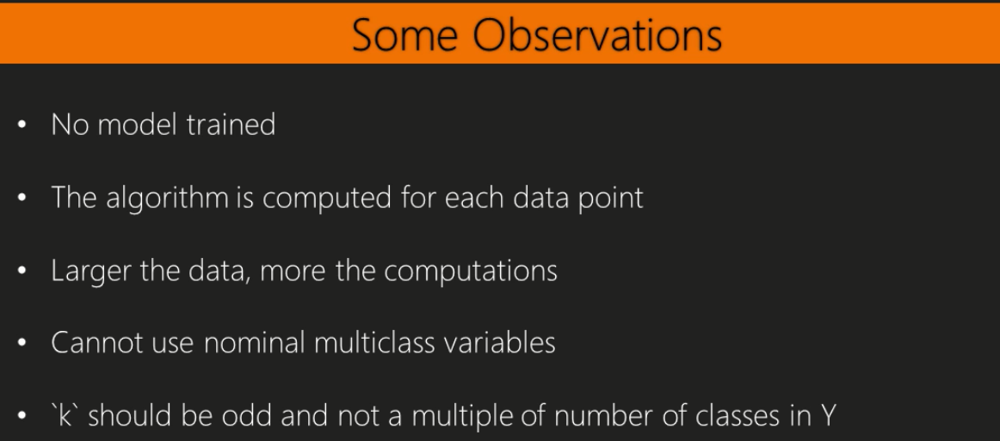
5 Building tree based models using rpart, cTree and C5.0
In this section we will understand:
How decision trees work
- Tree structure
- Information gain, entropy, gini index, classification error
Why is it called a greedy algorithm
Algorithms and Implementations
- rpart(CART)
- cTree
C5.0
5.1 How do decision trees work? - cTree example
library(caret)
# Splitting data
train_rows = createDataPartition(iris$Species, p = 0.7, list = F)
trainData = iris[train_rows, ]
testData = iris[-train_rows, ]
# partykit library for cTree algorithm
library(partykit)
ctMod = ctree(Species ~ Sepal.Length + Sepal.Width + Petal.Length + Petal.Width, data = trainData)
print(ctMod)##
## Conditional inference tree with 4 terminal nodes
##
## Response: Species
## Inputs: Sepal.Length, Sepal.Width, Petal.Length, Petal.Width
## Number of observations: 105
##
## 1) Petal.Length <= 1.9; criterion = 1, statistic = 98.062
## 2)* weights = 35
## 1) Petal.Length > 1.9
## 3) Petal.Width <= 1.7; criterion = 1, statistic = 48.405
## 4) Petal.Length <= 4.6; criterion = 0.975, statistic = 7.425
## 5)* weights = 29
## 4) Petal.Length > 4.6
## 6)* weights = 8
## 3) Petal.Width > 1.7
## 7)* weights = 33plot(ctMod)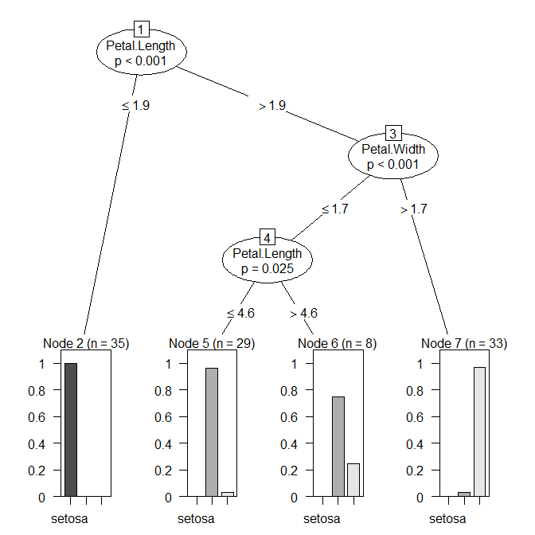
This is a classification tree.
- It is a hierarchical structure that aims to classify a categorial response variable by learning how each predictor divides the Y variable.
- The very top of the tree is the root node and the ones at the very end are called the terminal nodes.
- The minimum number of observations required in order to be considered for a split and the number of branches is controlled using parameters of the algorithm
- A 100% pure node will have only one class of Y
- The goal is to make the terminal node as pure as possible while not growing branches that are too deep.
So how is the tree grown?
- Each node is nothing but a rule based on an x variable.
- The rules are decided such that the resulting groups are as pure as possible.
- But how is the impurity/purity of groups measured?
- This is calculated via certain metrics, like for example, Entropy or Information gain.
- Basically, split that provides the most information gain, goes the first.
- This is the reason why decision trees are called greedy algorithms. This is because it is not guaranteed they will return the purest possible terminal nodes,
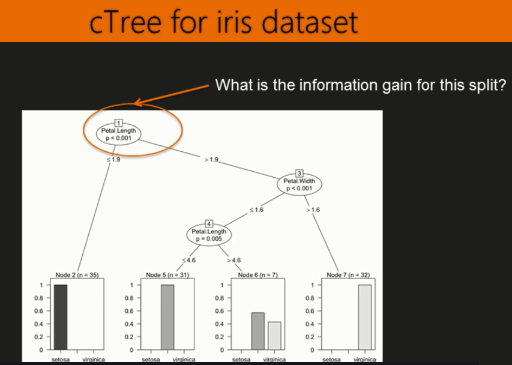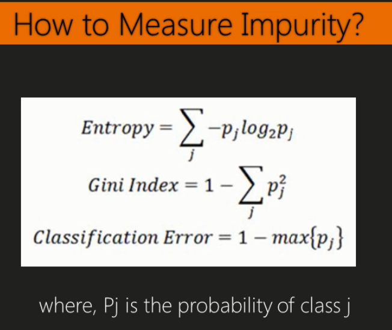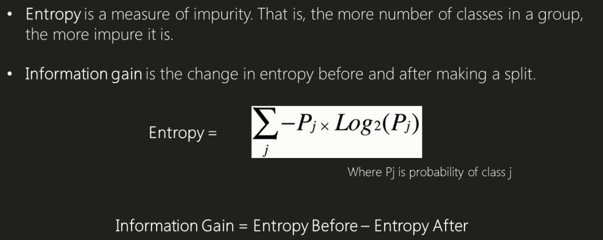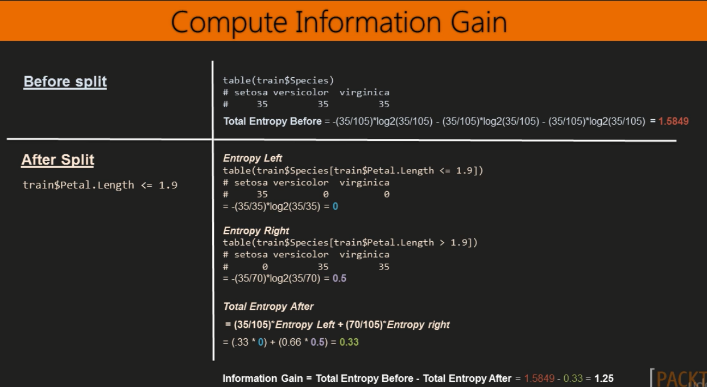
5.2 cTree algorithm - controlling parameters
We have seen how to implement a cTree algorithm. The cTree algorithms has many parameters feeding into it and we can play around with those parameters using the ctree_control function. Let’s check this creating another tree.
ctMod_2 = ctree(Species ~ Sepal.Length + Sepal.Width + Petal.Length + Petal.Width
, control = ctree_control(maxdepth = 2)
, data = trainData)
print(ctMod_2)##
## Conditional inference tree with 3 terminal nodes
##
## Response: Species
## Inputs: Sepal.Length, Sepal.Width, Petal.Length, Petal.Width
## Number of observations: 105
##
## 1) Petal.Length <= 1.9; criterion = 1, statistic = 98.062
## 2)* weights = 35
## 1) Petal.Length > 1.9
## 3) Petal.Width <= 1.7; criterion = 1, statistic = 48.405
## 4)* weights = 37
## 3) Petal.Width > 1.7
## 5)* weights = 33plot(ctMod_2)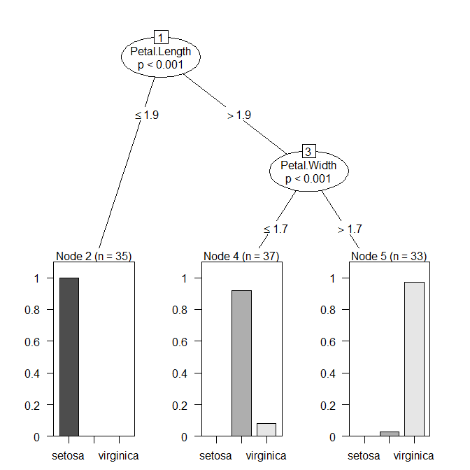
5.3 Predict using the previous 2 models
# Predict 1
out1 = predict(ctMod, testData)
# Predict 2
out2 = predict(ctMod_2, testData)
# How many miss matched predict 1
sum(testData[, 5] != out1)## [1] 2# How many miss matched predict 1
sum(testData[, 5] != out2)## [1] 25.4 rpart
5.4.1 Control parameters
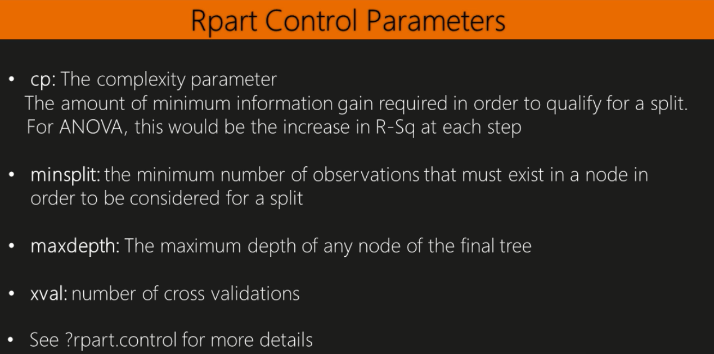
5.4.2 Implement in R
library(rpart)
# Model
rpartMod = rpart(Species ~ .
, data = trainData
, control = rpart.control(minsplit = 5
, cp = 0
, maxdepth = 4))
rpartMod## n= 105
##
## node), split, n, loss, yval, (yprob)
## * denotes terminal node
##
## 1) root 105 70 setosa (0.33333333 0.33333333 0.33333333)
## 2) Petal.Length< 2.6 35 0 setosa (1.00000000 0.00000000 0.00000000) *
## 3) Petal.Length>=2.6 70 35 versicolor (0.00000000 0.50000000 0.50000000)
## 6) Petal.Width< 1.75 37 3 versicolor (0.00000000 0.91891892 0.08108108)
## 12) Petal.Length< 5.05 35 1 versicolor (0.00000000 0.97142857 0.02857143) *
## 13) Petal.Length>=5.05 2 0 virginica (0.00000000 0.00000000 1.00000000) *
## 7) Petal.Width>=1.75 33 1 virginica (0.00000000 0.03030303 0.96969697) *# Prediction
pred = predict(rpartMod, testData, type = "class")
sum(testData[, 5] != pred)## [1] 25.4.3 Fancy rpart tree plotting
library(rattle)
# Option 1 - fancyRpartPlot
fancyRpartPlot(rpartMod)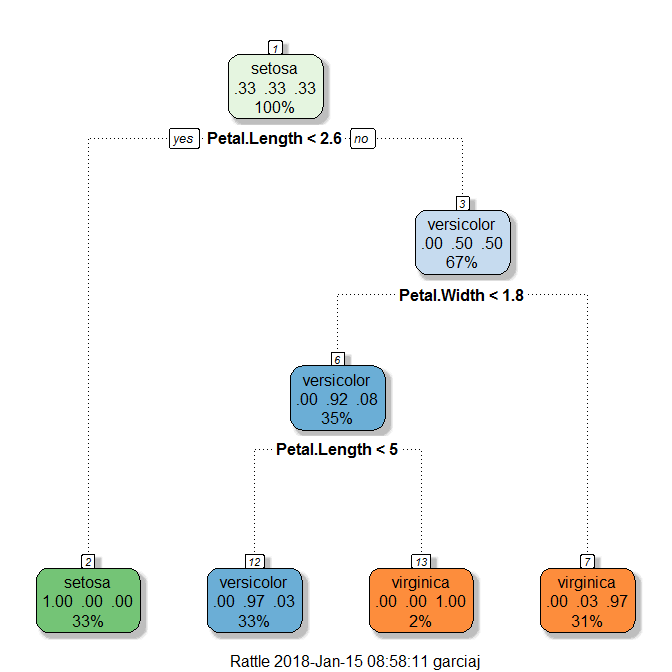
# Option 2 - convert to a partykit object and plot as a cTree plot
iris_party = as.party.rpart(rpartMod)
plot(iris_party)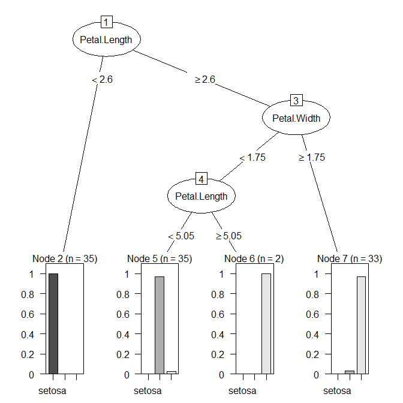
# Option 3 - manually
library(rpart.plot)
prp(rpartMod, extra = 1, type = 2)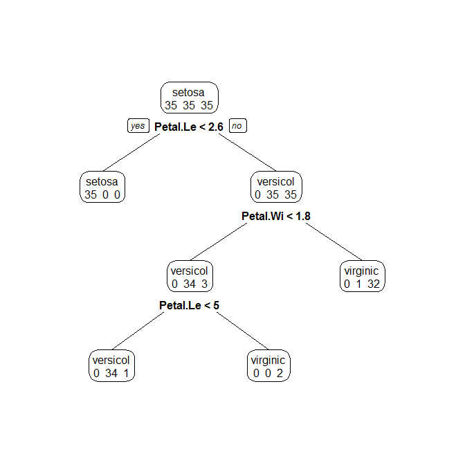
5.5 C5.0 algorithm
The C5.0 algorithm incorporates the boosting algorithm.
5.5.1 Tree
library(C50)
c5Mod = C5.0(Species ~ ., data = trainData
, control = C5.0Control(winnow = F))
summary(c5Mod)##
## Call:
## C5.0.formula(formula = Species ~ ., data = trainData, control = C5.0Control(winnow = F))
##
##
## C5.0 [Release 2.07 GPL Edition] Thu Dec 21 11:46:58 2017
## -------------------------------
##
## Class specified by attribute `outcome'
##
## Read 105 cases (5 attributes) from undefined.data
##
## Decision tree:
##
## Petal.Length <= 1.9: setosa (35)
## Petal.Length > 1.9:
## :...Petal.Width > 1.7: virginica (33/1)
## Petal.Width <= 1.7:
## :...Petal.Length <= 5: versicolor (35/1)
## Petal.Length > 5: virginica (2)
##
##
## Evaluation on training data (105 cases):
##
## Decision Tree
## ----------------
## Size Errors
##
## 4 2( 1.9%) <<
##
##
## (a) (b) (c) <-classified as
## ---- ---- ----
## 35 (a): class setosa
## 34 1 (b): class versicolor
## 1 34 (c): class virginica
##
##
## Attribute usage:
##
## 100.00% Petal.Length
## 66.67% Petal.Width
##
##
## Time: 0.0 secsplot(c5Mod)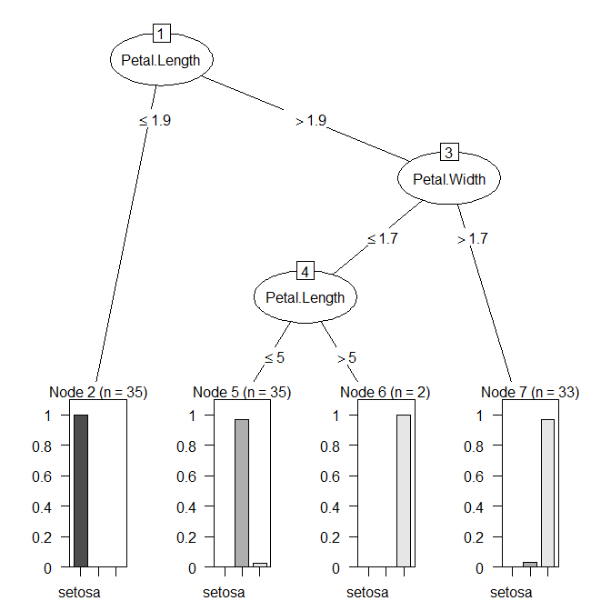
C5imp(c5Mod)## Overall
## Petal.Length 100.00
## Petal.Width 66.67
## Sepal.Length 0.00
## Sepal.Width 0.005.5.2 Rules
library(C50)
c5Mod = C5.0(Species ~ ., data = trainData
, control = C5.0Control(winnow = F)
, rules = T)
summary(c5Mod)##
## Call:
## C5.0.formula(formula = Species ~ ., data = trainData, control = C5.0Control(winnow = F), rules = T)
##
##
## C5.0 [Release 2.07 GPL Edition] Thu Dec 21 11:46:59 2017
## -------------------------------
##
## Class specified by attribute `outcome'
##
## Read 105 cases (5 attributes) from undefined.data
##
## Rules:
##
## Rule 1: (35, lift 2.9)
## Petal.Length <= 1.9
## -> class setosa [0.973]
##
## Rule 2: (35/1, lift 2.8)
## Petal.Length > 1.9
## Petal.Length <= 5
## Petal.Width <= 1.7
## -> class versicolor [0.946]
##
## Rule 3: (29, lift 2.9)
## Petal.Length > 5
## -> class virginica [0.968]
##
## Rule 4: (33/1, lift 2.8)
## Petal.Width > 1.7
## -> class virginica [0.943]
##
## Default class: setosa
##
##
## Evaluation on training data (105 cases):
##
## Rules
## ----------------
## No Errors
##
## 4 2( 1.9%) <<
##
##
## (a) (b) (c) <-classified as
## ---- ---- ----
## 35 (a): class setosa
## 34 1 (b): class versicolor
## 1 34 (c): class virginica
##
##
## Attribute usage:
##
## 94.29% Petal.Length
## 64.76% Petal.Width
##
##
## Time: 0.0 secs6 Building Predictive Models with the caret Package
Caret will enable you to control, evalute and train the model all within the same package.
6.1 Preprocessing
library(caret)
# Normalze all X's to range from 0 to 1
preprocessParams = preProcess(iris[,1:4], method = c("range"))
preprocessParams## Created from 150 samples and 4 variables
##
## Pre-processing:
## - ignored (0)
## - re-scaling to [0, 1] (4)# Apply the transform
normalized = predict(preprocessParams, iris[,1:4])
iris_n = cbind(normalized, Species = iris$Species)
summary(iris_n)## Sepal.Length Sepal.Width Petal.Length Petal.Width Species
## Min. :0.0000 Min. :0.0000 Min. :0.0000 Min. :0.00000 setosa :50
## 1st Qu.:0.2222 1st Qu.:0.3333 1st Qu.:0.1017 1st Qu.:0.08333 versicolor:50
## Median :0.4167 Median :0.4167 Median :0.5678 Median :0.50000 virginica :50
## Mean :0.4287 Mean :0.4406 Mean :0.4675 Mean :0.45806
## 3rd Qu.:0.5833 3rd Qu.:0.5417 3rd Qu.:0.6949 3rd Qu.:0.70833
## Max. :1.0000 Max. :1.0000 Max. :1.0000 Max. :1.00000Here is the full list of transformations you can apply using the method parameter in the preprocessParams function in the caret package
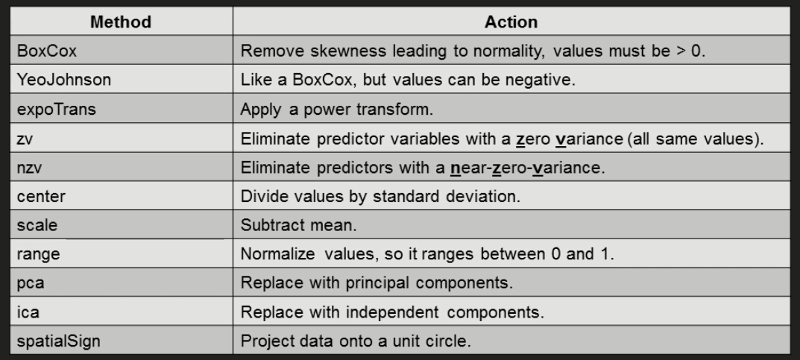
6.2 Training and predicting with knn using caret package
The most powerful feature in the caret package is the train function. If you go to the following web page, you will see the full list of predictive models that the caret package can handle.
**http://topepo.github.io/caret/available-models.html**
set.seed(100)
train_rows = createDataPartition(iris_n$Species, p = 0.7, list = F)
trainData = iris_n[train_rows, ]
testData = iris_n[-train_rows, ]
fit = train(Species ~ ., data = trainData, preProcess = c("range"), method = "knn")
fit## k-Nearest Neighbors
##
## 105 samples
## 4 predictor
## 3 classes: 'setosa', 'versicolor', 'virginica'
##
## Pre-processing: re-scaling to [0, 1] (4)
## Resampling: Bootstrapped (25 reps)
## Summary of sample sizes: 105, 105, 105, 105, 105, 105, ...
## Resampling results across tuning parameters:
##
## k Accuracy Kappa
## 5 0.9416307 0.9108015
## 7 0.9443025 0.9151724
## 9 0.9466442 0.9187246
##
## Accuracy was used to select the optimal model using the largest value.
## The final value used for the model was k = 9.Check that we can perform multiple steps within the train function in caret: both the preProcess step and the method chosen to train the data. The results show:
- Preprocessing was a rescaling to the range of 0 to 1, for 4 features
- Resampling means that the algorithm was run on the train data 25 times by resampling.
- Then for different values of the k parameter, we see the accuracy and kappa metrics.
# predict using the final model in the fit object
pred = predict(fit$finalModel, newdata = testData[,1:4], type="class")6.3 Controlling training method parameters caret package
We can do this by using the trainControl function that can be used as an input to the train function.
6.3.1 Creating the trainControl object and passing to a model
tc = trainControl(method = "repeatedcv", number = 5, repeats = 3)
fit_repeatedcv = train(Species ~ ., data = trainData,
preProcess = c("range")
, method = "knn"
, trControl = tc)
fit_repeatedcv## k-Nearest Neighbors
##
## 105 samples
## 4 predictor
## 3 classes: 'setosa', 'versicolor', 'virginica'
##
## Pre-processing: re-scaling to [0, 1] (4)
## Resampling: Cross-Validated (5 fold, repeated 3 times)
## Summary of sample sizes: 84, 84, 84, 84, 84, 84, ...
## Resampling results across tuning parameters:
##
## k Accuracy Kappa
## 5 0.9587302 0.9380952
## 7 0.9587302 0.9380952
## 9 0.9523810 0.9285714
##
## Accuracy was used to select the optimal model using the largest value.
## The final value used for the model was k = 5.6.3.2 Changing the evaluation metric
# We can also change the evaluation metric that the method will use to check the best model
fit_repeatedcv_kappa = train(Species ~ ., data = trainData,
preProcess = c("range")
, method = "knn"
, trControl = tc
, metric= "Kappa")
fit_repeatedcv_kappa## k-Nearest Neighbors
##
## 105 samples
## 4 predictor
## 3 classes: 'setosa', 'versicolor', 'virginica'
##
## Pre-processing: re-scaling to [0, 1] (4)
## Resampling: Cross-Validated (5 fold, repeated 3 times)
## Summary of sample sizes: 84, 84, 84, 84, 84, 84, ...
## Resampling results across tuning parameters:
##
## k Accuracy Kappa
## 5 0.9587302 0.9380952
## 7 0.9428571 0.9142857
## 9 0.9460317 0.9190476
##
## Kappa was used to select the optimal model using the largest value.
## The final value used for the model was k = 5.6.3.3 Adding more metric information to the output
# Add to the control parameters a summary function
tc = trainControl(method = "repeatedcv", number = 5, repeats = 3
, summaryFunction = multiClassSummary)
# We can also change the evaluation metric that the method will use to check the best model
fit_repeatedcv_kappa = train(Species ~ ., data = trainData,
preProcess = c("range")
, method = "knn"
, trControl = tc
, metric= "Kappa")
fit_repeatedcv_kappa## k-Nearest Neighbors
##
## 105 samples
## 4 predictor
## 3 classes: 'setosa', 'versicolor', 'virginica'
##
## Pre-processing: re-scaling to [0, 1] (4)
## Resampling: Cross-Validated (5 fold, repeated 3 times)
## Summary of sample sizes: 84, 84, 84, 84, 84, 84, ...
## Resampling results across tuning parameters:
##
## k Accuracy Kappa Mean_F1 Mean_Sensitivity Mean_Specificity Mean_Pos_Pred_Value Mean_Neg_Pred_Value Mean_Detection_Rate Mean_Balanced_Accuracy
## 5 0.9587302 0.9380952 0.9585165 0.9587302 0.9793651 0.9621252 0.9802910 0.3195767 0.9690476
## 7 0.9619048 0.9428571 0.9617074 0.9619048 0.9809524 0.9649030 0.9817725 0.3206349 0.9714286
## 9 0.9523810 0.9285714 0.9521673 0.9523810 0.9761905 0.9557760 0.9771164 0.3174603 0.9642857
##
## Kappa was used to select the optimal model using the largest value.
## The final value used for the model was k = 7.6.4 Controlling the tuning of the algorithms parameters
As you know, there are multiple training algorithms we can use to train a model. Sometimes, some of these models have many possible input parameters that we can change, so a very helpful function is the modelLookup, that will output the list of parameters you can use (or alternatively, you can use the webpage above).
# As you can see, knn as only 1 input parameter to change
modelLookup("knn")## model parameter label forReg forClass probModel
## 1 knn k #Neighbors TRUE TRUE TRUE6.4.1 Defining grid search
# Create the grid for knn
grid = expand.grid(k = c(5,7,11,13,17,19,23,25))
fit_repeatedcv_kappa_tunegrid = train(Species ~ .,
data = trainData
, preProcess = c("range")
, method = "knn"
, trControl = tc
, metric = "Kappa"
, tuneGrid = grid)
fit_repeatedcv_kappa_tunegrid## k-Nearest Neighbors
##
## 105 samples
## 4 predictor
## 3 classes: 'setosa', 'versicolor', 'virginica'
##
## Pre-processing: re-scaling to [0, 1] (4)
## Resampling: Cross-Validated (5 fold, repeated 3 times)
## Summary of sample sizes: 84, 84, 84, 84, 84, 84, ...
## Resampling results across tuning parameters:
##
## k Accuracy Kappa Mean_F1 Mean_Sensitivity Mean_Specificity Mean_Pos_Pred_Value Mean_Neg_Pred_Value Mean_Detection_Rate Mean_Balanced_Accuracy
## 5 0.9587302 0.9380952 0.9583842 0.9587302 0.9793651 0.9635362 0.9806878 0.3195767 0.9690476
## 7 0.9587302 0.9380952 0.9583516 0.9587302 0.9793651 0.9643298 0.9808995 0.3195767 0.9690476
## 11 0.9555556 0.9333333 0.9551608 0.9555556 0.9777778 0.9615520 0.9794180 0.3185185 0.9666667
## 13 0.9492063 0.9238095 0.9486793 0.9492063 0.9746032 0.9566138 0.9766402 0.3164021 0.9619048
## 17 0.9492063 0.9238095 0.9485470 0.9492063 0.9746032 0.9580247 0.9770370 0.3164021 0.9619048
## 19 0.9555556 0.9333333 0.9550285 0.9555556 0.9777778 0.9629630 0.9798148 0.3185185 0.9666667
## 23 0.9523810 0.9285714 0.9519699 0.9523810 0.9761905 0.9578483 0.9777086 0.3174603 0.9642857
## 25 0.9428571 0.9142857 0.9419984 0.9428571 0.9714286 0.9529101 0.9742328 0.3142857 0.9571429
##
## Kappa was used to select the optimal model using the largest value.
## The final value used for the model was k = 7.fit_repeatedcv_kappa_tunegrid$finalModel## 7-nearest neighbor classification model
## Training set class distribution:
##
## setosa versicolor virginica
## 35 35 356.5 C5 algorithm with caret
# Create the grid for knn
c5_fit_repeatedcv_kappa = train(Species ~ .
, data = trainData
, preProcess = c("range")
, method = "C5.0"
, trControl = tc
, metric = "Kappa"
, tuneLength = 10)## Warning: 'trials' should be <= 31 for this object. Predictions generated using 31 trials
## Warning: 'trials' should be <= 31 for this object. Predictions generated using 31 trials
## Warning: 'trials' should be <= 31 for this object. Predictions generated using 31 trials
## Warning: 'trials' should be <= 31 for this object. Predictions generated using 31 trials
## Warning: 'trials' should be <= 31 for this object. Predictions generated using 31 trials## Warning: 'trials' should be <= 8 for this object. Predictions generated using 8 trials
## Warning: 'trials' should be <= 8 for this object. Predictions generated using 8 trials
## Warning: 'trials' should be <= 8 for this object. Predictions generated using 8 trials
## Warning: 'trials' should be <= 8 for this object. Predictions generated using 8 trials
## Warning: 'trials' should be <= 8 for this object. Predictions generated using 8 trials
## Warning: 'trials' should be <= 8 for this object. Predictions generated using 8 trials
## Warning: 'trials' should be <= 8 for this object. Predictions generated using 8 trials
## Warning: 'trials' should be <= 8 for this object. Predictions generated using 8 trials## Warning: 'trials' should be <= 31 for this object. Predictions generated using 31 trials
## Warning: 'trials' should be <= 31 for this object. Predictions generated using 31 trials
## Warning: 'trials' should be <= 31 for this object. Predictions generated using 31 trials
## Warning: 'trials' should be <= 31 for this object. Predictions generated using 31 trials
## Warning: 'trials' should be <= 31 for this object. Predictions generated using 31 trials## Warning: 'trials' should be <= 8 for this object. Predictions generated using 8 trials
## Warning: 'trials' should be <= 8 for this object. Predictions generated using 8 trials
## Warning: 'trials' should be <= 8 for this object. Predictions generated using 8 trials
## Warning: 'trials' should be <= 8 for this object. Predictions generated using 8 trials
## Warning: 'trials' should be <= 8 for this object. Predictions generated using 8 trials
## Warning: 'trials' should be <= 8 for this object. Predictions generated using 8 trials
## Warning: 'trials' should be <= 8 for this object. Predictions generated using 8 trials
## Warning: 'trials' should be <= 8 for this object. Predictions generated using 8 trials## Warning: 'trials' should be <= 4 for this object. Predictions generated using 4 trials
## Warning: 'trials' should be <= 4 for this object. Predictions generated using 4 trials
## Warning: 'trials' should be <= 4 for this object. Predictions generated using 4 trials
## Warning: 'trials' should be <= 4 for this object. Predictions generated using 4 trials
## Warning: 'trials' should be <= 4 for this object. Predictions generated using 4 trials
## Warning: 'trials' should be <= 4 for this object. Predictions generated using 4 trials
## Warning: 'trials' should be <= 4 for this object. Predictions generated using 4 trials
## Warning: 'trials' should be <= 4 for this object. Predictions generated using 4 trials
## Warning: 'trials' should be <= 4 for this object. Predictions generated using 4 trials
## Warning: 'trials' should be <= 4 for this object. Predictions generated using 4 trials
## Warning: 'trials' should be <= 4 for this object. Predictions generated using 4 trials
## Warning: 'trials' should be <= 4 for this object. Predictions generated using 4 trials
## Warning: 'trials' should be <= 4 for this object. Predictions generated using 4 trials
## Warning: 'trials' should be <= 4 for this object. Predictions generated using 4 trials
## Warning: 'trials' should be <= 4 for this object. Predictions generated using 4 trials
## Warning: 'trials' should be <= 4 for this object. Predictions generated using 4 trials
## Warning: 'trials' should be <= 4 for this object. Predictions generated using 4 trials
## Warning: 'trials' should be <= 4 for this object. Predictions generated using 4 trials
## Warning: 'trials' should be <= 4 for this object. Predictions generated using 4 trials
## Warning: 'trials' should be <= 4 for this object. Predictions generated using 4 trials
## Warning: 'trials' should be <= 4 for this object. Predictions generated using 4 trials
## Warning: 'trials' should be <= 4 for this object. Predictions generated using 4 trials
## Warning: 'trials' should be <= 4 for this object. Predictions generated using 4 trials
## Warning: 'trials' should be <= 4 for this object. Predictions generated using 4 trials
## Warning: 'trials' should be <= 4 for this object. Predictions generated using 4 trials
## Warning: 'trials' should be <= 4 for this object. Predictions generated using 4 trials
## Warning: 'trials' should be <= 4 for this object. Predictions generated using 4 trials
## Warning: 'trials' should be <= 4 for this object. Predictions generated using 4 trials
## Warning: 'trials' should be <= 4 for this object. Predictions generated using 4 trials
## Warning: 'trials' should be <= 4 for this object. Predictions generated using 4 trials
## Warning: 'trials' should be <= 4 for this object. Predictions generated using 4 trials
## Warning: 'trials' should be <= 4 for this object. Predictions generated using 4 trials
## Warning: 'trials' should be <= 4 for this object. Predictions generated using 4 trials
## Warning: 'trials' should be <= 4 for this object. Predictions generated using 4 trials
## Warning: 'trials' should be <= 4 for this object. Predictions generated using 4 trials
## Warning: 'trials' should be <= 4 for this object. Predictions generated using 4 trials
## Warning: 'trials' should be <= 4 for this object. Predictions generated using 4 trials
## Warning: 'trials' should be <= 4 for this object. Predictions generated using 4 trials
## Warning: 'trials' should be <= 4 for this object. Predictions generated using 4 trials
## Warning: 'trials' should be <= 4 for this object. Predictions generated using 4 trials
## Warning: 'trials' should be <= 4 for this object. Predictions generated using 4 trials
## Warning: 'trials' should be <= 4 for this object. Predictions generated using 4 trials
## Warning: 'trials' should be <= 4 for this object. Predictions generated using 4 trials
## Warning: 'trials' should be <= 4 for this object. Predictions generated using 4 trials
## Warning: 'trials' should be <= 4 for this object. Predictions generated using 4 trials
## Warning: 'trials' should be <= 4 for this object. Predictions generated using 4 trials
## Warning: 'trials' should be <= 4 for this object. Predictions generated using 4 trials
## Warning: 'trials' should be <= 4 for this object. Predictions generated using 4 trials
## Warning: 'trials' should be <= 4 for this object. Predictions generated using 4 trials
## Warning: 'trials' should be <= 4 for this object. Predictions generated using 4 trials
## Warning: 'trials' should be <= 4 for this object. Predictions generated using 4 trials
## Warning: 'trials' should be <= 4 for this object. Predictions generated using 4 trials
## Warning: 'trials' should be <= 4 for this object. Predictions generated using 4 trials
## Warning: 'trials' should be <= 4 for this object. Predictions generated using 4 trials
## Warning: 'trials' should be <= 4 for this object. Predictions generated using 4 trials
## Warning: 'trials' should be <= 4 for this object. Predictions generated using 4 trials
## Warning: 'trials' should be <= 4 for this object. Predictions generated using 4 trials
## Warning: 'trials' should be <= 4 for this object. Predictions generated using 4 trials
## Warning: 'trials' should be <= 4 for this object. Predictions generated using 4 trials
## Warning: 'trials' should be <= 4 for this object. Predictions generated using 4 trials
## Warning: 'trials' should be <= 4 for this object. Predictions generated using 4 trials
## Warning: 'trials' should be <= 4 for this object. Predictions generated using 4 trials
## Warning: 'trials' should be <= 4 for this object. Predictions generated using 4 trials
## Warning: 'trials' should be <= 4 for this object. Predictions generated using 4 trials## Warning: 'trials' should be <= 6 for this object. Predictions generated using 6 trials
## Warning: 'trials' should be <= 6 for this object. Predictions generated using 6 trials
## Warning: 'trials' should be <= 6 for this object. Predictions generated using 6 trials
## Warning: 'trials' should be <= 6 for this object. Predictions generated using 6 trials
## Warning: 'trials' should be <= 6 for this object. Predictions generated using 6 trials
## Warning: 'trials' should be <= 6 for this object. Predictions generated using 6 trials
## Warning: 'trials' should be <= 6 for this object. Predictions generated using 6 trials
## Warning: 'trials' should be <= 6 for this object. Predictions generated using 6 trials
## Warning: 'trials' should be <= 6 for this object. Predictions generated using 6 trials
## Warning: 'trials' should be <= 6 for this object. Predictions generated using 6 trials
## Warning: 'trials' should be <= 6 for this object. Predictions generated using 6 trials
## Warning: 'trials' should be <= 6 for this object. Predictions generated using 6 trials
## Warning: 'trials' should be <= 6 for this object. Predictions generated using 6 trials
## Warning: 'trials' should be <= 6 for this object. Predictions generated using 6 trials
## Warning: 'trials' should be <= 6 for this object. Predictions generated using 6 trials
## Warning: 'trials' should be <= 6 for this object. Predictions generated using 6 trials
## Warning: 'trials' should be <= 6 for this object. Predictions generated using 6 trials
## Warning: 'trials' should be <= 6 for this object. Predictions generated using 6 trials
## Warning: 'trials' should be <= 6 for this object. Predictions generated using 6 trials
## Warning: 'trials' should be <= 6 for this object. Predictions generated using 6 trials
## Warning: 'trials' should be <= 6 for this object. Predictions generated using 6 trials
## Warning: 'trials' should be <= 6 for this object. Predictions generated using 6 trials
## Warning: 'trials' should be <= 6 for this object. Predictions generated using 6 trials
## Warning: 'trials' should be <= 6 for this object. Predictions generated using 6 trials## Warning: 'trials' should be <= 32 for this object. Predictions generated using 32 trials
## Warning: 'trials' should be <= 32 for this object. Predictions generated using 32 trials
## Warning: 'trials' should be <= 32 for this object. Predictions generated using 32 trials
## Warning: 'trials' should be <= 32 for this object. Predictions generated using 32 trials
## Warning: 'trials' should be <= 32 for this object. Predictions generated using 32 trials## Warning: 'trials' should be <= 6 for this object. Predictions generated using 6 trials
## Warning: 'trials' should be <= 6 for this object. Predictions generated using 6 trials
## Warning: 'trials' should be <= 6 for this object. Predictions generated using 6 trials
## Warning: 'trials' should be <= 6 for this object. Predictions generated using 6 trials
## Warning: 'trials' should be <= 6 for this object. Predictions generated using 6 trials
## Warning: 'trials' should be <= 6 for this object. Predictions generated using 6 trials
## Warning: 'trials' should be <= 6 for this object. Predictions generated using 6 trials
## Warning: 'trials' should be <= 6 for this object. Predictions generated using 6 trials## Warning: 'trials' should be <= 32 for this object. Predictions generated using 32 trials
## Warning: 'trials' should be <= 32 for this object. Predictions generated using 32 trials
## Warning: 'trials' should be <= 32 for this object. Predictions generated using 32 trials
## Warning: 'trials' should be <= 32 for this object. Predictions generated using 32 trials
## Warning: 'trials' should be <= 32 for this object. Predictions generated using 32 trials## Warning: 'trials' should be <= 6 for this object. Predictions generated using 6 trials
## Warning: 'trials' should be <= 6 for this object. Predictions generated using 6 trials
## Warning: 'trials' should be <= 6 for this object. Predictions generated using 6 trials
## Warning: 'trials' should be <= 6 for this object. Predictions generated using 6 trials
## Warning: 'trials' should be <= 6 for this object. Predictions generated using 6 trials
## Warning: 'trials' should be <= 6 for this object. Predictions generated using 6 trials
## Warning: 'trials' should be <= 6 for this object. Predictions generated using 6 trials
## Warning: 'trials' should be <= 6 for this object. Predictions generated using 6 trials## Warning: 'trials' should be <= 5 for this object. Predictions generated using 5 trials
## Warning: 'trials' should be <= 5 for this object. Predictions generated using 5 trials
## Warning: 'trials' should be <= 5 for this object. Predictions generated using 5 trials
## Warning: 'trials' should be <= 5 for this object. Predictions generated using 5 trials
## Warning: 'trials' should be <= 5 for this object. Predictions generated using 5 trials
## Warning: 'trials' should be <= 5 for this object. Predictions generated using 5 trials
## Warning: 'trials' should be <= 5 for this object. Predictions generated using 5 trials
## Warning: 'trials' should be <= 5 for this object. Predictions generated using 5 trials## Warning: 'trials' should be <= 6 for this object. Predictions generated using 6 trials
## Warning: 'trials' should be <= 6 for this object. Predictions generated using 6 trials
## Warning: 'trials' should be <= 6 for this object. Predictions generated using 6 trials
## Warning: 'trials' should be <= 6 for this object. Predictions generated using 6 trials
## Warning: 'trials' should be <= 6 for this object. Predictions generated using 6 trials
## Warning: 'trials' should be <= 6 for this object. Predictions generated using 6 trials
## Warning: 'trials' should be <= 6 for this object. Predictions generated using 6 trials
## Warning: 'trials' should be <= 6 for this object. Predictions generated using 6 trials## Warning: 'trials' should be <= 5 for this object. Predictions generated using 5 trials
## Warning: 'trials' should be <= 5 for this object. Predictions generated using 5 trials
## Warning: 'trials' should be <= 5 for this object. Predictions generated using 5 trials
## Warning: 'trials' should be <= 5 for this object. Predictions generated using 5 trials
## Warning: 'trials' should be <= 5 for this object. Predictions generated using 5 trials
## Warning: 'trials' should be <= 5 for this object. Predictions generated using 5 trials
## Warning: 'trials' should be <= 5 for this object. Predictions generated using 5 trials
## Warning: 'trials' should be <= 5 for this object. Predictions generated using 5 trials
## Warning: 'trials' should be <= 5 for this object. Predictions generated using 5 trials
## Warning: 'trials' should be <= 5 for this object. Predictions generated using 5 trials
## Warning: 'trials' should be <= 5 for this object. Predictions generated using 5 trials
## Warning: 'trials' should be <= 5 for this object. Predictions generated using 5 trials
## Warning: 'trials' should be <= 5 for this object. Predictions generated using 5 trials
## Warning: 'trials' should be <= 5 for this object. Predictions generated using 5 trials
## Warning: 'trials' should be <= 5 for this object. Predictions generated using 5 trials
## Warning: 'trials' should be <= 5 for this object. Predictions generated using 5 trials## Warning: 'trials' should be <= 20 for this object. Predictions generated using 20 trials
## Warning: 'trials' should be <= 20 for this object. Predictions generated using 20 trials
## Warning: 'trials' should be <= 20 for this object. Predictions generated using 20 trials
## Warning: 'trials' should be <= 20 for this object. Predictions generated using 20 trials
## Warning: 'trials' should be <= 20 for this object. Predictions generated using 20 trials
## Warning: 'trials' should be <= 20 for this object. Predictions generated using 20 trials## Warning: 'trials' should be <= 5 for this object. Predictions generated using 5 trials
## Warning: 'trials' should be <= 5 for this object. Predictions generated using 5 trials
## Warning: 'trials' should be <= 5 for this object. Predictions generated using 5 trials
## Warning: 'trials' should be <= 5 for this object. Predictions generated using 5 trials
## Warning: 'trials' should be <= 5 for this object. Predictions generated using 5 trials
## Warning: 'trials' should be <= 5 for this object. Predictions generated using 5 trials
## Warning: 'trials' should be <= 5 for this object. Predictions generated using 5 trials
## Warning: 'trials' should be <= 5 for this object. Predictions generated using 5 trials## Warning: 'trials' should be <= 20 for this object. Predictions generated using 20 trials
## Warning: 'trials' should be <= 20 for this object. Predictions generated using 20 trials
## Warning: 'trials' should be <= 20 for this object. Predictions generated using 20 trials
## Warning: 'trials' should be <= 20 for this object. Predictions generated using 20 trials
## Warning: 'trials' should be <= 20 for this object. Predictions generated using 20 trials
## Warning: 'trials' should be <= 20 for this object. Predictions generated using 20 trials## Warning: 'trials' should be <= 3 for this object. Predictions generated using 3 trials
## Warning: 'trials' should be <= 3 for this object. Predictions generated using 3 trials
## Warning: 'trials' should be <= 3 for this object. Predictions generated using 3 trials
## Warning: 'trials' should be <= 3 for this object. Predictions generated using 3 trials
## Warning: 'trials' should be <= 3 for this object. Predictions generated using 3 trials
## Warning: 'trials' should be <= 3 for this object. Predictions generated using 3 trials
## Warning: 'trials' should be <= 3 for this object. Predictions generated using 3 trials
## Warning: 'trials' should be <= 3 for this object. Predictions generated using 3 trials
## Warning: 'trials' should be <= 3 for this object. Predictions generated using 3 trials
## Warning: 'trials' should be <= 3 for this object. Predictions generated using 3 trials
## Warning: 'trials' should be <= 3 for this object. Predictions generated using 3 trials
## Warning: 'trials' should be <= 3 for this object. Predictions generated using 3 trials
## Warning: 'trials' should be <= 3 for this object. Predictions generated using 3 trials
## Warning: 'trials' should be <= 3 for this object. Predictions generated using 3 trials
## Warning: 'trials' should be <= 3 for this object. Predictions generated using 3 trials
## Warning: 'trials' should be <= 3 for this object. Predictions generated using 3 trials
## Warning: 'trials' should be <= 3 for this object. Predictions generated using 3 trials
## Warning: 'trials' should be <= 3 for this object. Predictions generated using 3 trials
## Warning: 'trials' should be <= 3 for this object. Predictions generated using 3 trials
## Warning: 'trials' should be <= 3 for this object. Predictions generated using 3 trials
## Warning: 'trials' should be <= 3 for this object. Predictions generated using 3 trials
## Warning: 'trials' should be <= 3 for this object. Predictions generated using 3 trials
## Warning: 'trials' should be <= 3 for this object. Predictions generated using 3 trials
## Warning: 'trials' should be <= 3 for this object. Predictions generated using 3 trials
## Warning: 'trials' should be <= 3 for this object. Predictions generated using 3 trials
## Warning: 'trials' should be <= 3 for this object. Predictions generated using 3 trials
## Warning: 'trials' should be <= 3 for this object. Predictions generated using 3 trials
## Warning: 'trials' should be <= 3 for this object. Predictions generated using 3 trials
## Warning: 'trials' should be <= 3 for this object. Predictions generated using 3 trials
## Warning: 'trials' should be <= 3 for this object. Predictions generated using 3 trials
## Warning: 'trials' should be <= 3 for this object. Predictions generated using 3 trials
## Warning: 'trials' should be <= 3 for this object. Predictions generated using 3 trials## Warning: 'trials' should be <= 6 for this object. Predictions generated using 6 trials
## Warning: 'trials' should be <= 6 for this object. Predictions generated using 6 trials
## Warning: 'trials' should be <= 6 for this object. Predictions generated using 6 trials
## Warning: 'trials' should be <= 6 for this object. Predictions generated using 6 trials
## Warning: 'trials' should be <= 6 for this object. Predictions generated using 6 trials
## Warning: 'trials' should be <= 6 for this object. Predictions generated using 6 trials
## Warning: 'trials' should be <= 6 for this object. Predictions generated using 6 trials
## Warning: 'trials' should be <= 6 for this object. Predictions generated using 6 trials## Warning: 'trials' should be <= 44 for this object. Predictions generated using 44 trials
## Warning: 'trials' should be <= 44 for this object. Predictions generated using 44 trials
## Warning: 'trials' should be <= 44 for this object. Predictions generated using 44 trials
## Warning: 'trials' should be <= 44 for this object. Predictions generated using 44 trials## Warning: 'trials' should be <= 6 for this object. Predictions generated using 6 trials
## Warning: 'trials' should be <= 6 for this object. Predictions generated using 6 trials
## Warning: 'trials' should be <= 6 for this object. Predictions generated using 6 trials
## Warning: 'trials' should be <= 6 for this object. Predictions generated using 6 trials
## Warning: 'trials' should be <= 6 for this object. Predictions generated using 6 trials
## Warning: 'trials' should be <= 6 for this object. Predictions generated using 6 trials
## Warning: 'trials' should be <= 6 for this object. Predictions generated using 6 trials
## Warning: 'trials' should be <= 6 for this object. Predictions generated using 6 trials## Warning: 'trials' should be <= 42 for this object. Predictions generated using 42 trials
## Warning: 'trials' should be <= 42 for this object. Predictions generated using 42 trials
## Warning: 'trials' should be <= 42 for this object. Predictions generated using 42 trials
## Warning: 'trials' should be <= 42 for this object. Predictions generated using 42 trials## Warning: 'trials' should be <= 1 for this object. Predictions generated using 1 trials
## Warning: 'trials' should be <= 1 for this object. Predictions generated using 1 trials
## Warning: 'trials' should be <= 1 for this object. Predictions generated using 1 trials
## Warning: 'trials' should be <= 1 for this object. Predictions generated using 1 trials
## Warning: 'trials' should be <= 1 for this object. Predictions generated using 1 trials
## Warning: 'trials' should be <= 1 for this object. Predictions generated using 1 trials
## Warning: 'trials' should be <= 1 for this object. Predictions generated using 1 trials
## Warning: 'trials' should be <= 1 for this object. Predictions generated using 1 trials
## Warning: 'trials' should be <= 1 for this object. Predictions generated using 1 trials
## Warning: 'trials' should be <= 1 for this object. Predictions generated using 1 trials
## Warning: 'trials' should be <= 1 for this object. Predictions generated using 1 trials
## Warning: 'trials' should be <= 1 for this object. Predictions generated using 1 trials
## Warning: 'trials' should be <= 1 for this object. Predictions generated using 1 trials
## Warning: 'trials' should be <= 1 for this object. Predictions generated using 1 trials
## Warning: 'trials' should be <= 1 for this object. Predictions generated using 1 trials
## Warning: 'trials' should be <= 1 for this object. Predictions generated using 1 trials
## Warning: 'trials' should be <= 1 for this object. Predictions generated using 1 trials
## Warning: 'trials' should be <= 1 for this object. Predictions generated using 1 trials
## Warning: 'trials' should be <= 1 for this object. Predictions generated using 1 trials
## Warning: 'trials' should be <= 1 for this object. Predictions generated using 1 trials
## Warning: 'trials' should be <= 1 for this object. Predictions generated using 1 trials
## Warning: 'trials' should be <= 1 for this object. Predictions generated using 1 trials
## Warning: 'trials' should be <= 1 for this object. Predictions generated using 1 trials
## Warning: 'trials' should be <= 1 for this object. Predictions generated using 1 trials
## Warning: 'trials' should be <= 1 for this object. Predictions generated using 1 trials
## Warning: 'trials' should be <= 1 for this object. Predictions generated using 1 trials
## Warning: 'trials' should be <= 1 for this object. Predictions generated using 1 trials
## Warning: 'trials' should be <= 1 for this object. Predictions generated using 1 trials
## Warning: 'trials' should be <= 1 for this object. Predictions generated using 1 trials
## Warning: 'trials' should be <= 1 for this object. Predictions generated using 1 trials
## Warning: 'trials' should be <= 1 for this object. Predictions generated using 1 trials
## Warning: 'trials' should be <= 1 for this object. Predictions generated using 1 trials## Warning: 'trials' should be <= 4 for this object. Predictions generated using 4 trials
## Warning: 'trials' should be <= 4 for this object. Predictions generated using 4 trials
## Warning: 'trials' should be <= 4 for this object. Predictions generated using 4 trials
## Warning: 'trials' should be <= 4 for this object. Predictions generated using 4 trials
## Warning: 'trials' should be <= 4 for this object. Predictions generated using 4 trials
## Warning: 'trials' should be <= 4 for this object. Predictions generated using 4 trials
## Warning: 'trials' should be <= 4 for this object. Predictions generated using 4 trials
## Warning: 'trials' should be <= 4 for this object. Predictions generated using 4 trials## Warning: 'trials' should be <= 41 for this object. Predictions generated using 41 trials
## Warning: 'trials' should be <= 41 for this object. Predictions generated using 41 trials
## Warning: 'trials' should be <= 41 for this object. Predictions generated using 41 trials
## Warning: 'trials' should be <= 41 for this object. Predictions generated using 41 trials## Warning: 'trials' should be <= 4 for this object. Predictions generated using 4 trials
## Warning: 'trials' should be <= 4 for this object. Predictions generated using 4 trials
## Warning: 'trials' should be <= 4 for this object. Predictions generated using 4 trials
## Warning: 'trials' should be <= 4 for this object. Predictions generated using 4 trials
## Warning: 'trials' should be <= 4 for this object. Predictions generated using 4 trials
## Warning: 'trials' should be <= 4 for this object. Predictions generated using 4 trials
## Warning: 'trials' should be <= 4 for this object. Predictions generated using 4 trials
## Warning: 'trials' should be <= 4 for this object. Predictions generated using 4 trials## Warning: 'trials' should be <= 41 for this object. Predictions generated using 41 trials
## Warning: 'trials' should be <= 41 for this object. Predictions generated using 41 trials
## Warning: 'trials' should be <= 41 for this object. Predictions generated using 41 trials
## Warning: 'trials' should be <= 41 for this object. Predictions generated using 41 trials## Warning: 'trials' should be <= 3 for this object. Predictions generated using 3 trials
## Warning: 'trials' should be <= 3 for this object. Predictions generated using 3 trials
## Warning: 'trials' should be <= 3 for this object. Predictions generated using 3 trials
## Warning: 'trials' should be <= 3 for this object. Predictions generated using 3 trials
## Warning: 'trials' should be <= 3 for this object. Predictions generated using 3 trials
## Warning: 'trials' should be <= 3 for this object. Predictions generated using 3 trials
## Warning: 'trials' should be <= 3 for this object. Predictions generated using 3 trials
## Warning: 'trials' should be <= 3 for this object. Predictions generated using 3 trials
## Warning: 'trials' should be <= 3 for this object. Predictions generated using 3 trials
## Warning: 'trials' should be <= 3 for this object. Predictions generated using 3 trials
## Warning: 'trials' should be <= 3 for this object. Predictions generated using 3 trials
## Warning: 'trials' should be <= 3 for this object. Predictions generated using 3 trials
## Warning: 'trials' should be <= 3 for this object. Predictions generated using 3 trials
## Warning: 'trials' should be <= 3 for this object. Predictions generated using 3 trials
## Warning: 'trials' should be <= 3 for this object. Predictions generated using 3 trials
## Warning: 'trials' should be <= 3 for this object. Predictions generated using 3 trials
## Warning: 'trials' should be <= 3 for this object. Predictions generated using 3 trials
## Warning: 'trials' should be <= 3 for this object. Predictions generated using 3 trials
## Warning: 'trials' should be <= 3 for this object. Predictions generated using 3 trials
## Warning: 'trials' should be <= 3 for this object. Predictions generated using 3 trials
## Warning: 'trials' should be <= 3 for this object. Predictions generated using 3 trials
## Warning: 'trials' should be <= 3 for this object. Predictions generated using 3 trials
## Warning: 'trials' should be <= 3 for this object. Predictions generated using 3 trials
## Warning: 'trials' should be <= 3 for this object. Predictions generated using 3 trials
## Warning: 'trials' should be <= 3 for this object. Predictions generated using 3 trials
## Warning: 'trials' should be <= 3 for this object. Predictions generated using 3 trials
## Warning: 'trials' should be <= 3 for this object. Predictions generated using 3 trials
## Warning: 'trials' should be <= 3 for this object. Predictions generated using 3 trials
## Warning: 'trials' should be <= 3 for this object. Predictions generated using 3 trials
## Warning: 'trials' should be <= 3 for this object. Predictions generated using 3 trials
## Warning: 'trials' should be <= 3 for this object. Predictions generated using 3 trials
## Warning: 'trials' should be <= 3 for this object. Predictions generated using 3 trials## Warning: 'trials' should be <= 10 for this object. Predictions generated using 10 trials
## Warning: 'trials' should be <= 10 for this object. Predictions generated using 10 trials
## Warning: 'trials' should be <= 10 for this object. Predictions generated using 10 trials
## Warning: 'trials' should be <= 10 for this object. Predictions generated using 10 trials
## Warning: 'trials' should be <= 10 for this object. Predictions generated using 10 trials
## Warning: 'trials' should be <= 10 for this object. Predictions generated using 10 trials
## Warning: 'trials' should be <= 10 for this object. Predictions generated using 10 trials## Warning: 'trials' should be <= 9 for this object. Predictions generated using 9 trials
## Warning: 'trials' should be <= 9 for this object. Predictions generated using 9 trials
## Warning: 'trials' should be <= 9 for this object. Predictions generated using 9 trials
## Warning: 'trials' should be <= 9 for this object. Predictions generated using 9 trials
## Warning: 'trials' should be <= 9 for this object. Predictions generated using 9 trials
## Warning: 'trials' should be <= 9 for this object. Predictions generated using 9 trials
## Warning: 'trials' should be <= 9 for this object. Predictions generated using 9 trials
## Warning: 'trials' should be <= 9 for this object. Predictions generated using 9 trials## Warning: 'trials' should be <= 10 for this object. Predictions generated using 10 trials
## Warning: 'trials' should be <= 10 for this object. Predictions generated using 10 trials
## Warning: 'trials' should be <= 10 for this object. Predictions generated using 10 trials
## Warning: 'trials' should be <= 10 for this object. Predictions generated using 10 trials
## Warning: 'trials' should be <= 10 for this object. Predictions generated using 10 trials
## Warning: 'trials' should be <= 10 for this object. Predictions generated using 10 trials
## Warning: 'trials' should be <= 10 for this object. Predictions generated using 10 trials## Warning: 'trials' should be <= 9 for this object. Predictions generated using 9 trials
## Warning: 'trials' should be <= 9 for this object. Predictions generated using 9 trials
## Warning: 'trials' should be <= 9 for this object. Predictions generated using 9 trials
## Warning: 'trials' should be <= 9 for this object. Predictions generated using 9 trials
## Warning: 'trials' should be <= 9 for this object. Predictions generated using 9 trials
## Warning: 'trials' should be <= 9 for this object. Predictions generated using 9 trials
## Warning: 'trials' should be <= 9 for this object. Predictions generated using 9 trials
## Warning: 'trials' should be <= 9 for this object. Predictions generated using 9 trials## Warning: 'trials' should be <= 5 for this object. Predictions generated using 5 trials
## Warning: 'trials' should be <= 5 for this object. Predictions generated using 5 trials
## Warning: 'trials' should be <= 5 for this object. Predictions generated using 5 trials
## Warning: 'trials' should be <= 5 for this object. Predictions generated using 5 trials
## Warning: 'trials' should be <= 5 for this object. Predictions generated using 5 trials
## Warning: 'trials' should be <= 5 for this object. Predictions generated using 5 trials
## Warning: 'trials' should be <= 5 for this object. Predictions generated using 5 trials
## Warning: 'trials' should be <= 5 for this object. Predictions generated using 5 trials## Warning: 'trials' should be <= 38 for this object. Predictions generated using 38 trials
## Warning: 'trials' should be <= 38 for this object. Predictions generated using 38 trials
## Warning: 'trials' should be <= 38 for this object. Predictions generated using 38 trials
## Warning: 'trials' should be <= 38 for this object. Predictions generated using 38 trials
## Warning: 'trials' should be <= 38 for this object. Predictions generated using 38 trials## Warning: 'trials' should be <= 5 for this object. Predictions generated using 5 trials
## Warning: 'trials' should be <= 5 for this object. Predictions generated using 5 trials
## Warning: 'trials' should be <= 5 for this object. Predictions generated using 5 trials
## Warning: 'trials' should be <= 5 for this object. Predictions generated using 5 trials
## Warning: 'trials' should be <= 5 for this object. Predictions generated using 5 trials
## Warning: 'trials' should be <= 5 for this object. Predictions generated using 5 trials
## Warning: 'trials' should be <= 5 for this object. Predictions generated using 5 trials
## Warning: 'trials' should be <= 5 for this object. Predictions generated using 5 trials## Warning: 'trials' should be <= 38 for this object. Predictions generated using 38 trials
## Warning: 'trials' should be <= 38 for this object. Predictions generated using 38 trials
## Warning: 'trials' should be <= 38 for this object. Predictions generated using 38 trials
## Warning: 'trials' should be <= 38 for this object. Predictions generated using 38 trials
## Warning: 'trials' should be <= 38 for this object. Predictions generated using 38 trials## Warning: 'trials' should be <= 6 for this object. Predictions generated using 6 trials
## Warning: 'trials' should be <= 6 for this object. Predictions generated using 6 trials
## Warning: 'trials' should be <= 6 for this object. Predictions generated using 6 trials
## Warning: 'trials' should be <= 6 for this object. Predictions generated using 6 trials
## Warning: 'trials' should be <= 6 for this object. Predictions generated using 6 trials
## Warning: 'trials' should be <= 6 for this object. Predictions generated using 6 trials
## Warning: 'trials' should be <= 6 for this object. Predictions generated using 6 trials
## Warning: 'trials' should be <= 6 for this object. Predictions generated using 6 trials## Warning: 'trials' should be <= 5 for this object. Predictions generated using 5 trials
## Warning: 'trials' should be <= 5 for this object. Predictions generated using 5 trials
## Warning: 'trials' should be <= 5 for this object. Predictions generated using 5 trials
## Warning: 'trials' should be <= 5 for this object. Predictions generated using 5 trials
## Warning: 'trials' should be <= 5 for this object. Predictions generated using 5 trials
## Warning: 'trials' should be <= 5 for this object. Predictions generated using 5 trials
## Warning: 'trials' should be <= 5 for this object. Predictions generated using 5 trials
## Warning: 'trials' should be <= 5 for this object. Predictions generated using 5 trials## Warning: 'trials' should be <= 6 for this object. Predictions generated using 6 trials
## Warning: 'trials' should be <= 6 for this object. Predictions generated using 6 trials
## Warning: 'trials' should be <= 6 for this object. Predictions generated using 6 trials
## Warning: 'trials' should be <= 6 for this object. Predictions generated using 6 trials
## Warning: 'trials' should be <= 6 for this object. Predictions generated using 6 trials
## Warning: 'trials' should be <= 6 for this object. Predictions generated using 6 trials
## Warning: 'trials' should be <= 6 for this object. Predictions generated using 6 trials
## Warning: 'trials' should be <= 6 for this object. Predictions generated using 6 trials## Warning: 'trials' should be <= 5 for this object. Predictions generated using 5 trials
## Warning: 'trials' should be <= 5 for this object. Predictions generated using 5 trials
## Warning: 'trials' should be <= 5 for this object. Predictions generated using 5 trials
## Warning: 'trials' should be <= 5 for this object. Predictions generated using 5 trials
## Warning: 'trials' should be <= 5 for this object. Predictions generated using 5 trials
## Warning: 'trials' should be <= 5 for this object. Predictions generated using 5 trials
## Warning: 'trials' should be <= 5 for this object. Predictions generated using 5 trials
## Warning: 'trials' should be <= 5 for this object. Predictions generated using 5 trialsc5Fit = c5_fit_repeatedcv_kappa$finalModel
out = predict(c5Fit, testData, type = "class")
caret::confusionMatrix(out, testData$Species)## Confusion Matrix and Statistics
##
## Reference
## Prediction setosa versicolor virginica
## setosa 14 0 0
## versicolor 1 13 0
## virginica 0 2 15
##
## Overall Statistics
##
## Accuracy : 0.9333
## 95% CI : (0.8173, 0.986)
## No Information Rate : 0.3333
## P-Value [Acc > NIR] : < 0.00000000000000022
##
## Kappa : 0.9
## Mcnemar's Test P-Value : NA
##
## Statistics by Class:
##
## Class: setosa Class: versicolor Class: virginica
## Sensitivity 0.9333 0.8667 1.0000
## Specificity 1.0000 0.9667 0.9333
## Pos Pred Value 1.0000 0.9286 0.8824
## Neg Pred Value 0.9677 0.9355 1.0000
## Prevalence 0.3333 0.3333 0.3333
## Detection Rate 0.3111 0.2889 0.3333
## Detection Prevalence 0.3111 0.3111 0.3778
## Balanced Accuracy 0.9667 0.9167 0.9667# Multiclass summary on test data
testResults = predict(c5Fit, testData, type = "prob")
testResults = data.frame(testResults)
testResults$obs = testData$Species
testResults$pred = predict(c5Fit, testData, type = "class")
multiClassSummary(testResults, lev = levels(testData$Species))## logLoss AUC Accuracy Kappa Mean_F1 Mean_Sensitivity Mean_Specificity Mean_Pos_Pred_Value Mean_Neg_Pred_Value Mean_Detection_Rate
## 2.3025851 0.9500000 0.9333333 0.9000000 0.9331897 0.9333333 0.9666667 0.9369748 0.9677419 0.3111111
## Mean_Balanced_Accuracy
## 0.95000006.6 cTree algorithm with caret
library(party)
# Create the grid for knn
ctree_fit_repeatedcv_kappa = train(Species ~ .
, data = trainData
, preProcess = c("range")
, method = "ctree"
, trControl = tc
, metric = "Kappa"
, tuneLength = 10)6.7 Comparing the 3 built models with Resample function
If you check the output of the resamples function, we can see for example that, for mean sensitivity, the ctree algorithm provided the best result.
combo = resamples(list(KNN = fit_repeatedcv_kappa
, C5 = c5_fit_repeatedcv_kappa
, cTree = ctree_fit_repeatedcv_kappa))
combo##
## Call:
## resamples.default(x = list(KNN = fit_repeatedcv_kappa, C5 = c5_fit_repeatedcv_kappa, cTree = ctree_fit_repeatedcv_kappa))
##
## Models: KNN, C5, cTree
## Number of resamples: 15
## Performance metrics: Accuracy, Kappa, Mean_Balanced_Accuracy, Mean_Detection_Rate, Mean_F1, Mean_Neg_Pred_Value, Mean_Pos_Pred_Value, Mean_Sensitivity, Mean_Specificity
## Time estimates for: everything, final model fitsummary(combo)##
## Call:
## summary.resamples(object = combo)
##
## Models: KNN, C5, cTree
## Number of resamples: 15
##
## Accuracy
## Min. 1st Qu. Median Mean 3rd Qu. Max. NA's
## KNN 0.9047619 0.9285714 0.952381 0.9619048 1 1 0
## C5 0.9047619 0.9523810 0.952381 0.9619048 1 1 0
## cTree 0.8571429 0.9523810 1.000000 0.9682540 1 1 0
##
## Kappa
## Min. 1st Qu. Median Mean 3rd Qu. Max. NA's
## KNN 0.8571429 0.8928571 0.9285714 0.9428571 1 1 0
## C5 0.8571429 0.9285714 0.9285714 0.9428571 1 1 0
## cTree 0.7857143 0.9285714 1.0000000 0.9523810 1 1 0
##
## Mean_Balanced_Accuracy
## Min. 1st Qu. Median Mean 3rd Qu. Max. NA's
## KNN 0.9285714 0.9464286 0.9642857 0.9714286 1 1 0
## C5 0.9285714 0.9642857 0.9642857 0.9714286 1 1 0
## cTree 0.8928571 0.9642857 1.0000000 0.9761905 1 1 0
##
## Mean_Detection_Rate
## Min. 1st Qu. Median Mean 3rd Qu. Max. NA's
## KNN 0.3015873 0.3095238 0.3174603 0.3206349 0.3333333 0.3333333 0
## C5 0.3015873 0.3174603 0.3174603 0.3206349 0.3333333 0.3333333 0
## cTree 0.2857143 0.3174603 0.3333333 0.3227513 0.3333333 0.3333333 0
##
## Mean_F1
## Min. 1st Qu. Median Mean 3rd Qu. Max. NA's
## KNN 0.9027778 0.9284493 0.9521368 0.9617074 1 1 0
## C5 0.9027778 0.9521368 0.9521368 0.9615263 1 1 0
## cTree 0.8502674 0.9521368 1.0000000 0.9675819 1 1 0
##
## Mean_Neg_Pred_Value
## Min. 1st Qu. Median Mean 3rd Qu. Max. NA's
## KNN 0.9523810 0.9680556 0.9777778 0.9817725 1 1 0
## C5 0.9539683 0.9777778 0.9777778 0.9824868 1 1 0
## cTree 0.9411765 0.9777778 1.0000000 0.9858932 1 1 0
##
## Mean_Pos_Pred_Value
## Min. 1st Qu. Median Mean 3rd Qu. Max. NA's
## KNN 0.9047619 0.9421296 0.9583333 0.9649030 1 1 0
## C5 0.9107143 0.9583333 0.9583333 0.9675044 1 1 0
## cTree 0.9000000 0.9583333 1.0000000 0.9745062 1 1 0
##
## Mean_Sensitivity
## Min. 1st Qu. Median Mean 3rd Qu. Max. NA's
## KNN 0.9047619 0.9285714 0.952381 0.9619048 1 1 0
## C5 0.9047619 0.9523810 0.952381 0.9619048 1 1 0
## cTree 0.8571429 0.9523810 1.000000 0.9682540 1 1 0
##
## Mean_Specificity
## Min. 1st Qu. Median Mean 3rd Qu. Max. NA's
## KNN 0.9523810 0.9642857 0.9761905 0.9809524 1 1 0
## C5 0.9523810 0.9761905 0.9761905 0.9809524 1 1 0
## cTree 0.9285714 0.9761905 1.0000000 0.9841270 1 1 07 Selecting important features with RFE, varImp and Boruta
7.1 Boruta package
Boruta is a feature ranking selecting algorithm based on random Forests. As you can see from the following code, Boruta will run several times the algorithm and we can then extract the most important variables.
# Load the data
data("GlaucomaM", package = "TH.data")
str(GlaucomaM)## 'data.frame': 196 obs. of 63 variables:
## $ ag : num 2.22 2.68 1.98 1.75 2.99 ...
## $ at : num 0.354 0.475 0.343 0.269 0.599 0.483 0.355 0.312 0.365 0.53 ...
## $ as : num 0.58 0.672 0.508 0.476 0.686 0.763 0.601 0.463 0.57 0.834 ...
## $ an : num 0.686 0.868 0.624 0.525 1.039 ...
## $ ai : num 0.601 0.667 0.504 0.476 0.667 0.77 0.586 0.483 0.572 0.814 ...
## $ eag : num 1.267 2.053 1.2 0.612 2.513 ...
## $ eat : num 0.336 0.44 0.299 0.147 0.543 0.462 0.298 0.226 0.253 0.472 ...
## $ eas : num 0.346 0.52 0.396 0.017 0.607 0.637 0.243 0.247 0.353 0.534 ...
## $ ean : num 0.255 0.639 0.259 0.044 0.871 0.504 0.153 0.023 0.038 0.517 ...
## $ eai : num 0.331 0.454 0.246 0.405 0.492 0.597 0.387 0.192 0.221 0.576 ...
## $ abrg : num 0.479 1.09 0.465 0.17 1.8 ...
## $ abrt : num 0.26 0.377 0.209 0.062 0.431 0.394 0.188 0.126 0.073 0.162 ...
## $ abrs : num 0.107 0.257 0.112 0 0.494 0.365 0.102 0.048 0.033 0.163 ...
## $ abrn : num 0.014 0.212 0.041 0 0.601 0.251 0.033 0 0 0.197 ...
## $ abri : num 0.098 0.245 0.103 0.108 0.274 0.301 0.159 0.04 0.034 0.186 ...
## $ hic : num 0.214 0.382 0.195 -0.03 0.383 0.442 0.18 -0.023 -0.005 0.181 ...
## $ mhcg : num 0.111 0.14 0.062 -0.015 0.089 0.128 0.097 -0.042 -0.002 0.037 ...
## $ mhct : num 0.412 0.338 0.356 0.074 0.233 0.375 0.329 0.168 0.197 0.283 ...
## $ mhcs : num 0.036 0.104 0.045 -0.084 0.145 0.049 0.037 -0.073 -0.004 -0.035 ...
## $ mhcn : num 0.105 0.08 -0.009 -0.05 0.023 0.111 0.019 -0.109 -0.038 0.019 ...
## $ mhci : num -0.022 0.109 -0.048 0.035 0.007 0.052 0.093 -0.077 -0.098 -0.049 ...
## $ phcg : num -0.139 -0.015 -0.149 -0.182 -0.131 -0.088 -0.125 -0.183 -0.22 -0.15 ...
## $ phct : num 0.242 0.296 0.206 -0.097 0.163 0.281 0.238 0.084 0.103 0.227 ...
## $ phcs : num -0.053 -0.015 -0.092 -0.125 0.055 -0.067 -0.029 -0.183 -0.088 -0.107 ...
## $ phcn : num 0.01 -0.015 -0.081 -0.138 -0.131 -0.062 -0.125 -0.151 -0.214 -0.1 ...
## $ phci : num -0.139 0.036 -0.149 -0.182 -0.115 -0.088 -0.121 -0.138 -0.22 -0.15 ...
## $ hvc : num 0.613 0.382 0.557 0.373 0.405 0.507 0.486 0.394 0.484 0.455 ...
## $ vbsg : num 0.303 0.676 0.3 0.048 0.889 0.972 0.252 0.107 0.116 0.497 ...
## $ vbst : num 0.103 0.181 0.084 0.011 0.151 0.213 0.073 0.043 0.042 0.083 ...
## $ vbss : num 0.088 0.186 0.088 0 0.253 0.316 0.058 0.038 0.042 0.122 ...
## $ vbsn : num 0.022 0.141 0.046 0 0.33 0.197 0.024 0.001 0.002 0.138 ...
## $ vbsi : num 0.09 0.169 0.082 0.036 0.155 0.246 0.096 0.026 0.03 0.155 ...
## $ vasg : num 0.062 0.029 0.036 0.07 0.02 0.043 0.057 0.072 0.116 0.037 ...
## $ vast : num 0 0.001 0.002 0.005 0.001 0.001 0.002 0.003 0.004 0.001 ...
## $ vass : num 0.011 0.007 0.004 0.03 0.004 0.005 0.016 0.011 0.014 0.009 ...
## $ vasn : num 0.032 0.011 0.016 0.033 0.008 0.028 0.03 0.045 0.075 0.02 ...
## $ vasi : num 0.018 0.01 0.013 0.002 0.007 0.009 0.01 0.012 0.023 0.007 ...
## $ vbrg : num 0.075 0.37 0.081 0.005 0.532 0.467 0.085 0.032 0.012 0.146 ...
## $ vbrt : num 0.039 0.127 0.034 0.001 0.103 0.136 0.03 0.017 0.005 0.03 ...
## $ vbrs : num 0.021 0.099 0.019 0 0.173 0.148 0.018 0.011 0.002 0.029 ...
## $ vbrn : num 0.002 0.05 0.007 0 0.181 0.078 0.006 0 0 0.04 ...
## $ vbri : num 0.014 0.093 0.021 0.004 0.075 0.104 0.031 0.004 0.005 0.047 ...
## $ varg : num 0.756 0.41 0.565 0.38 0.228 0.54 0.587 0.479 0.704 0.696 ...
## $ vart : num 0.009 0.006 0.014 0.032 0.011 0.008 0.013 0.015 0.035 0.029 ...
## $ vars : num 0.209 0.105 0.132 0.147 0.026 0.133 0.185 0.115 0.154 0.219 ...
## $ varn : num 0.298 0.181 0.243 0.151 0.105 0.232 0.263 0.223 0.302 0.246 ...
## $ vari : num 0.24 0.117 0.177 0.05 0.087 0.167 0.126 0.127 0.214 0.202 ...
## $ mdg : num 0.705 0.898 0.687 0.207 0.721 0.927 0.573 0.559 0.476 0.648 ...
## $ mdt : num 0.637 0.85 0.643 0.171 0.638 0.842 0.525 0.444 0.439 0.577 ...
## $ mds : num 0.738 0.907 0.689 0.022 0.73 0.953 0.58 0.672 0.403 0.627 ...
## $ mdn : num 0.596 0.771 0.684 0.046 0.73 0.906 0.581 0.124 0.217 0.62 ...
## $ mdi : num 0.691 0.94 0.7 0.221 0.64 0.898 0.575 0.411 0.581 0.666 ...
## $ tmg : num -0.236 -0.211 -0.185 -0.148 -0.052 -0.04 -0.149 -0.298 -0.278 -0.19 ...
## $ tmt : num -0.018 -0.014 -0.097 -0.035 -0.105 0.087 -0.036 -0.14 -0.144 -0.288 ...
## $ tms : num -0.23 -0.165 -0.235 -0.449 0.084 0.018 -0.18 -0.378 -0.273 -0.193 ...
## $ tmn : num -0.51 -0.317 -0.337 -0.217 -0.012 -0.094 -0.394 -0.457 -0.194 -0.084 ...
## $ tmi : num -0.158 -0.192 -0.02 -0.091 -0.054 -0.051 -0.07 -0.25 -0.371 -0.096 ...
## $ mr : num 0.841 0.924 0.795 0.746 0.977 ...
## $ rnf : num 0.41 0.256 0.378 0.2 0.193 0.339 0.308 0.263 0.316 0.319 ...
## $ mdic : num 0.137 0.252 0.152 0.027 0.297 0.333 0.113 0.058 0.053 0.158 ...
## $ emd : num 0.239 0.329 0.25 0.078 0.354 0.442 0.233 0.155 0.134 0.237 ...
## $ mv : num 0.035 0.022 0.029 0.023 0.034 0.028 0.012 0.023 0.029 0.022 ...
## $ Class: Factor w/ 2 levels "glaucoma","normal": 2 2 2 2 2 2 2 2 2 2 ...summary(GlaucomaM)## ag at as an ai eag eat eas ean eai abrg abrt abrs abrn
## Min. :1.312 Min. :0.2010 Min. :0.3450 Min. :0.3970 Min. :0.3690 Min. :0.415 Min. :0.1370 Min. :0.0170 Min. :0.0080 Min. :0.0980 Min. :0.0030 Min. :0.0030 Min. :0.0000 Min. :0.0000
## 1st Qu.:2.139 1st Qu.:0.3708 1st Qu.:0.5385 1st Qu.:0.6810 1st Qu.:0.5505 1st Qu.:1.309 1st Qu.:0.3157 1st Qu.:0.3807 1st Qu.:0.2805 1st Qu.:0.3725 1st Qu.:0.6817 1st Qu.:0.2450 1st Qu.:0.1928 1st Qu.:0.0885
## Median :2.533 Median :0.4445 Median :0.6305 Median :0.8085 Median :0.6320 Median :1.843 Median :0.4025 Median :0.4685 Median :0.5035 Median :0.4840 Median :1.3120 Median :0.3225 Median :0.3250 Median :0.2520
## Mean :2.607 Mean :0.4590 Mean :0.6518 Mean :0.8359 Mean :0.6600 Mean :1.874 Mean :0.4064 Mean :0.4864 Mean :0.5012 Mean :0.4801 Mean :1.2919 Mean :0.3248 Mean :0.3295 Mean :0.3125
## 3rd Qu.:2.943 3rd Qu.:0.5280 3rd Qu.:0.7382 3rd Qu.:0.9520 3rd Qu.:0.7498 3rd Qu.:2.317 3rd Qu.:0.4833 3rd Qu.:0.6055 3rd Qu.:0.6895 3rd Qu.:0.5948 3rd Qu.:1.7352 3rd Qu.:0.4295 3rd Qu.:0.4512 3rd Qu.:0.4520
## Max. :5.444 Max. :0.9670 Max. :1.3400 Max. :1.7650 Max. :1.3730 Max. :4.125 Max. :0.8480 Max. :1.2250 Max. :1.5680 Max. :0.9610 Max. :4.9800 Max. :0.8270 Max. :1.3400 Max. :1.7650
## abri hic mhcg mhct mhcs mhcn mhci phcg phct phcs phcn phci hvc
## Min. :0.0000 Min. :-0.1890 Min. :-0.14700 Min. :-0.0470 Min. :-0.17200 Min. :-0.21200 Min. :-0.1610 Min. :-0.28600 Min. :-0.1210 Min. :-0.24700 Min. :-0.28500 Min. :-0.28600 Min. :0.1100
## 1st Qu.:0.1693 1st Qu.: 0.1958 1st Qu.: 0.04675 1st Qu.: 0.1610 1st Qu.: 0.00175 1st Qu.: 0.01975 1st Qu.:-0.0035 1st Qu.:-0.13300 1st Qu.: 0.0950 1st Qu.:-0.08925 1st Qu.:-0.08900 1st Qu.:-0.11200 1st Qu.:0.2860
## Median :0.3255 Median : 0.3240 Median : 0.09450 Median : 0.2110 Median : 0.07050 Median : 0.07950 Median : 0.0640 Median :-0.08800 Median : 0.1540 Median :-0.02850 Median :-0.03350 Median :-0.04700 Median :0.3470
## Mean :0.3251 Mean : 0.3050 Mean : 0.09415 Mean : 0.2142 Mean : 0.06123 Mean : 0.07380 Mean : 0.0647 Mean :-0.07853 Mean : 0.1477 Mean :-0.03105 Mean :-0.03238 Mean :-0.04238 Mean :0.3604
## 3rd Qu.:0.4595 3rd Qu.: 0.4190 3rd Qu.: 0.13825 3rd Qu.: 0.2742 3rd Qu.: 0.11825 3rd Qu.: 0.12250 3rd Qu.: 0.1300 3rd Qu.:-0.01650 3rd Qu.: 0.2052 3rd Qu.: 0.02600 3rd Qu.: 0.02400 3rd Qu.: 0.02700 3rd Qu.:0.4283
## Max. :1.2090 Max. : 0.8870 Max. : 0.32200 Max. : 0.4770 Max. : 0.29300 Max. : 0.66000 Max. : 0.4540 Max. : 0.14500 Max. : 0.4300 Max. : 0.16000 Max. : 0.39800 Max. : 0.37100 Max. :0.9690
## vbsg vbst vbss vbsn vbsi vasg vast vass vasn vasi vbrg vbrt vbrs vbrn
## Min. :0.0200 Min. :0.00700 Min. :0.00000 Min. :0.0000 Min. :0.00600 Min. :0.00800 Min. :0.000000 Min. :0.0010 Min. :0.00100 Min. :0.00100 Min. :0.0000 Min. :0.00000 Min. :0.00000 Min. :0.00000
## 1st Qu.:0.3315 1st Qu.:0.07575 1st Qu.:0.09275 1st Qu.:0.0525 1st Qu.:0.08275 1st Qu.:0.02200 1st Qu.:0.001000 1st Qu.:0.0040 1st Qu.:0.00900 1st Qu.:0.00400 1st Qu.:0.1338 1st Qu.:0.04075 1st Qu.:0.03875 1st Qu.:0.01275
## Median :0.5960 Median :0.12200 Median :0.16800 Median :0.1185 Median :0.15600 Median :0.03600 Median :0.001000 Median :0.0070 Median :0.01750 Median :0.00800 Median :0.3540 Median :0.08100 Median :0.10150 Median :0.05650
## Mean :0.6334 Mean :0.13399 Mean :0.18581 Mean :0.1494 Mean :0.16420 Mean :0.04967 Mean :0.002077 Mean :0.0101 Mean :0.02561 Mean :0.01186 Mean :0.4256 Mean :0.09719 Mean :0.12374 Mean :0.09906
## 3rd Qu.:0.8632 3rd Qu.:0.17400 3rd Qu.:0.26225 3rd Qu.:0.2157 3rd Qu.:0.22375 3rd Qu.:0.06425 3rd Qu.:0.002000 3rd Qu.:0.0110 3rd Qu.:0.03125 3rd Qu.:0.01425 3rd Qu.:0.5540 3rd Qu.:0.13300 3rd Qu.:0.16475 3rd Qu.:0.14025
## Max. :2.1260 Max. :0.44600 Max. :0.81700 Max. :0.6960 Max. :0.49000 Max. :0.75100 Max. :0.026000 Max. :0.2390 Max. :0.39700 Max. :0.10500 Max. :3.7000 Max. :0.39900 Max. :1.09900 Max. :1.62000
## vbri varg vart vars varn vari mdg mdt mds mdn mdi tmg tmt tms
## Min. :0.00000 Min. :0.0160 Min. :0.00100 Min. :0.00000 Min. :0.0000 Min. :0.00100 Min. :0.1210 Min. :0.1170 Min. :0.0220 Min. :0.0230 Min. :0.1160 Min. :-0.35300 Min. :-0.291000 Min. :-0.44900
## 1st Qu.:0.03275 1st Qu.:0.1450 1st Qu.:0.00400 1st Qu.:0.03375 1st Qu.:0.0630 1st Qu.:0.03400 1st Qu.:0.5773 1st Qu.:0.4910 1st Qu.:0.5760 1st Qu.:0.4585 1st Qu.:0.5298 1st Qu.:-0.16150 1st Qu.:-0.101000 1st Qu.:-0.13525
## Median :0.08750 Median :0.2780 Median :0.00700 Median :0.06950 Median :0.1170 Median :0.06750 Median :0.6825 Median :0.6015 Median :0.6915 Median :0.6320 Median :0.6370 Median :-0.08100 Median :-0.018500 Median :-0.03150
## Mean :0.10552 Mean :0.2962 Mean :0.01050 Mean :0.07595 Mean :0.1298 Mean :0.07991 Mean :0.6853 Mean :0.6095 Mean :0.6951 Mean :0.6115 Mean :0.6365 Mean :-0.09298 Mean :-0.004658 Mean :-0.03981
## 3rd Qu.:0.14925 3rd Qu.:0.3900 3rd Qu.:0.01225 3rd Qu.:0.10100 3rd Qu.:0.1780 3rd Qu.:0.11050 3rd Qu.:0.8125 3rd Qu.:0.7183 3rd Qu.:0.8110 3rd Qu.:0.7768 3rd Qu.:0.7455 3rd Qu.:-0.02525 3rd Qu.: 0.087750 3rd Qu.: 0.06800
## Max. :0.58900 Max. :1.3250 Max. :0.06500 Max. :0.39700 Max. :0.5970 Max. :0.26600 Max. :1.2980 Max. :1.2150 Max. :1.3510 Max. :1.2600 Max. :1.2470 Max. : 0.19200 Max. : 0.366000 Max. : 0.35800
## tmn tmi mr rnf mdic emd mv Class
## Min. :-0.51000 Min. :-0.40500 Min. :0.6470 Min. :-0.2970 Min. :0.0120 Min. :0.0470 Min. :0.00000 glaucoma:98
## 1st Qu.:-0.23100 1st Qu.:-0.12750 1st Qu.:0.8260 1st Qu.: 0.1197 1st Qu.:0.1440 1st Qu.:0.2305 1st Qu.:0.02100 normal :98
## Median :-0.14650 Median :-0.03600 Median :0.8995 Median : 0.1820 Median :0.2270 Median :0.2980 Median :0.02800
## Mean :-0.14720 Mean :-0.03651 Mean :0.9050 Mean : 0.1824 Mean :0.2313 Mean :0.3089 Mean :0.03354
## 3rd Qu.:-0.05625 3rd Qu.: 0.04950 3rd Qu.:0.9685 3rd Qu.: 0.2370 3rd Qu.:0.2993 3rd Qu.:0.3792 3rd Qu.:0.03825
## Max. : 0.24500 Max. : 0.41800 Max. :1.3170 Max. : 0.4510 Max. :0.6630 Max. :0.7430 Max. :0.18300# Split the data
set.seed(100)
train_rows = createDataPartition(GlaucomaM$Class, p = 0.7, list = F)
trainData = GlaucomaM[train_rows,]
testData = GlaucomaM[-train_rows,]
# Run boruta
library(Boruta)
borutaMod = Boruta(Class ~., data = trainData, doTrace = 1)## After 13 iterations, +2.5 secs:## confirmed 15 attributes: hic, mdic, mhcg, phcg, phci and 10 more;## rejected 18 attributes: abrt, ag, an, at, eai and 13 more;## still have 29 attributes left.## After 17 iterations, +3 secs:## confirmed 2 attributes: abrs, mhcn;## rejected 4 attributes: eag, phcs, vasn, vbrt;## still have 23 attributes left.## After 21 iterations, +3.5 secs:## confirmed 1 attribute: emd;## still have 22 attributes left.## After 24 iterations, +3.9 secs:## rejected 1 attribute: ai;## still have 21 attributes left.## After 27 iterations, +4.2 secs:## confirmed 2 attributes: hvc, vbri;## still have 19 attributes left.## After 36 iterations, +5.2 secs:## confirmed 2 attributes: vbrn, vbrs;## rejected 1 attribute: mdn;## still have 16 attributes left.## After 42 iterations, +6 secs:## confirmed 1 attribute: vbsi;## still have 15 attributes left.## After 50 iterations, +6.9 secs:## rejected 1 attribute: mhcs;## still have 14 attributes left.## After 81 iterations, +10 secs:## confirmed 1 attribute: vart;## still have 13 attributes left.## After 91 iterations, +11 secs:## rejected 1 attribute: vbss;## still have 12 attributes left.borutaMod## Boruta performed 99 iterations in 11.91672 secs.
## 24 attributes confirmed important: abrs, emd, hic, hvc, mdic and 19 more;
## 26 attributes confirmed unimportant: abrt, ag, ai, an, at and 21 more;
## 12 tentative attributes left: abrg, abri, abrn, as, ean and 7 more;# Retain confirmed and tentative
boruta_signif = getSelectedAttributes(borutaMod, withTentative = TRUE)
print(boruta_signif)## [1] "as" "ean" "abrg" "abrs" "abrn" "abri" "hic" "mhcg" "mhcn" "mhci" "phcg" "phcn" "phci" "hvc" "vbsg" "vbsn" "vbsi" "vasg" "vass" "vbrg" "vbrs" "vbrn" "vbri" "varg" "vart" "vars" "varn" "vari" "tmg" "tmt" "tms" "tmn" "tmi" "rnf" "mdic"
## [36] "emd"We can also perform a quick fix on the tentative variables
# Rough fix on tentative variables
roughFixMod = TentativeRoughFix(borutaMod)
boruta_signif = getSelectedAttributes(roughFixMod
, withTentative = TRUE)
boruta_signif## [1] "as" "ean" "abrs" "hic" "mhcg" "mhcn" "mhci" "phcg" "phcn" "phci" "hvc" "vbsg" "vbsn" "vbsi" "vass" "vbrg" "vbrs" "vbrn" "vbri" "varg" "vart" "vars" "varn" "vari" "tmg" "tms" "tmi" "rnf" "mdic" "emd"7.1.1 Plot the boruta selected variables
The selected variables are green:
plot(roughFixMod, cex.axis = 0.7, las = 2
, xlab = "", main = "Variable Importance")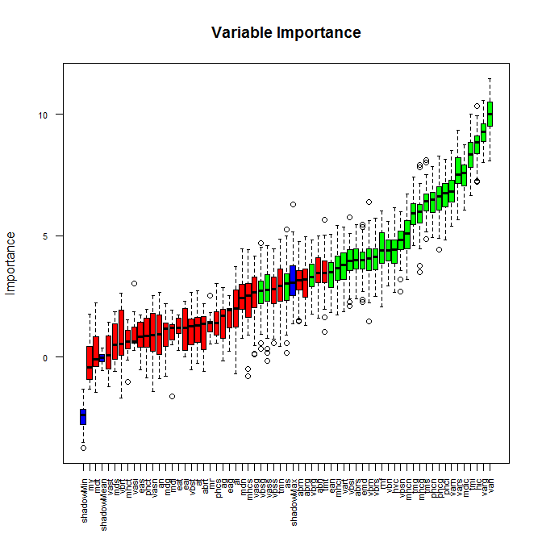
7.1.2 Importance scores with ATT stats
imps = attStats(roughFixMod)
imps = imps[order(-imps$meanImp),]
rownames(imps)## [1] "vari" "varg" "hic" "tmi" "vars" "mdic" "varn" "phci" "phcg" "phcn" "tms" "tmg" "mhcg" "mhcn" "vbsn" "rnf" "vbri" "hvc" "vbrs" "vbrn" "abrs" "emd" "vbsi" "vart" "mhci" "abri" "tmt" "ean" "vbrg" "abrn" "abrg" "tmn" "as" "vbss" "vass"
## [36] "vbsg" "vasg" "mdn" "mhcs" "ai" "eag" "phcs" "ag" "mr" "eat" "at" "eai" "vbst" "vasi" "abrt" "an" "mdi" "vasn" "phct" "mdg" "vbrt" "eas" "mds" "mhct" "mdt" "vast" "mv"head(imps)## meanImp medianImp minImp maxImp normHits decision
## vari 9.978837 10.023121 8.090273 11.491599 1 Confirmed
## varg 9.261466 9.296070 8.004088 10.591989 1 Confirmed
## hic 8.753001 8.843166 7.216180 10.358235 1 Confirmed
## tmi 8.320299 8.345862 6.667351 9.999155 1 Confirmed
## vars 7.648440 7.534870 5.671076 9.332766 1 Confirmed
## mdic 7.513680 7.572449 6.039153 8.744353 1 Confirmed7.2 varImp - variable importance
In general, the importance of a variable is computed based on how much the accuracy drops by removing that variable. So, the computed importance is relative and vary based on the modelling algorithm.
The caret package provide the varImp() function.
7.2.1 varImp with rpart model
rPartMod = train(Class ~ ., data = trainData, method = "rpart")
rpartVar = varImp(rPartMod)
rpartVar## rpart variable importance
##
## only 20 most important variables shown (out of 62)
##
## Overall
## varg 100.00
## vari 95.34
## tmi 88.71
## hic 86.32
## varn 83.52
## vbsn 0.00
## ean 0.00
## vasn 0.00
## vbsg 0.00
## abrs 0.00
## mdn 0.00
## eai 0.00
## mhcs 0.00
## phci 0.00
## abrg 0.00
## as 0.00
## mhci 0.00
## eas 0.00
## phcn 0.00
## abrn 0.007.2.2 varImp with random forest model
rfMod = train(Class ~ ., data = trainData, method = "rf")
rfVar = varImp(rfMod)
rfVar## rf variable importance
##
## only 20 most important variables shown (out of 62)
##
## Overall
## vari 100.00
## varg 82.47
## hic 69.53
## varn 67.26
## vars 64.34
## tmg 63.58
## phcn 61.75
## tmi 59.43
## mdic 57.67
## rnf 56.86
## phcg 53.67
## hvc 52.92
## abri 52.81
## mhcn 52.23
## vbsi 50.23
## ean 50.20
## tmt 47.56
## phci 46.46
## vbrg 43.70
## emd 43.577.3 Recursive Feature selection (RFE)
The RFE is a robust that systematically resamples to give an unbiased estimate of variable importance.
# Number of subsets to be retained
subsets = c(1:5, 10, 15, 20, 25, 35, 45, 55)
x = trainData[,-63]
y = trainData[,63]
# Remove high correlated predictors
correls = findCorrelation(cor(x), cutoff = 0.9)
if(length(correls) != 0){x = x[, -correls]}
# Create folds
set.seed(100)
index = createFolds(y , k = 10, returnTrain = T)
# Setting up the control argument
ctrl = rfeControl(functions = rfFuncs
, method = "repeatedcv"
, repeats = 5
, index = index
, verbose = TRUE)
# Creating the RFE
rfProfile = rfe(x = x
, y = y
, sizes = subsets
, rfeControl = ctrl)## +(rfe) fit Fold01 size: 37
## -(rfe) fit Fold01 size: 37
## +(rfe) imp Fold01
## -(rfe) imp Fold01
## +(rfe) fit Fold01 size: 35
## -(rfe) fit Fold01 size: 35
## +(rfe) fit Fold01 size: 25
## -(rfe) fit Fold01 size: 25
## +(rfe) fit Fold01 size: 20
## -(rfe) fit Fold01 size: 20
## +(rfe) fit Fold01 size: 15
## -(rfe) fit Fold01 size: 15
## +(rfe) fit Fold01 size: 10
## -(rfe) fit Fold01 size: 10
## +(rfe) fit Fold01 size: 5
## -(rfe) fit Fold01 size: 5
## +(rfe) fit Fold01 size: 4
## -(rfe) fit Fold01 size: 4
## +(rfe) fit Fold01 size: 3
## -(rfe) fit Fold01 size: 3
## +(rfe) fit Fold01 size: 2
## -(rfe) fit Fold01 size: 2
## +(rfe) fit Fold01 size: 1
## -(rfe) fit Fold01 size: 1
## +(rfe) fit Fold02 size: 37
## -(rfe) fit Fold02 size: 37
## +(rfe) imp Fold02
## -(rfe) imp Fold02
## +(rfe) fit Fold02 size: 35
## -(rfe) fit Fold02 size: 35
## +(rfe) fit Fold02 size: 25
## -(rfe) fit Fold02 size: 25
## +(rfe) fit Fold02 size: 20
## -(rfe) fit Fold02 size: 20
## +(rfe) fit Fold02 size: 15
## -(rfe) fit Fold02 size: 15
## +(rfe) fit Fold02 size: 10
## -(rfe) fit Fold02 size: 10
## +(rfe) fit Fold02 size: 5
## -(rfe) fit Fold02 size: 5
## +(rfe) fit Fold02 size: 4
## -(rfe) fit Fold02 size: 4
## +(rfe) fit Fold02 size: 3
## -(rfe) fit Fold02 size: 3
## +(rfe) fit Fold02 size: 2
## -(rfe) fit Fold02 size: 2
## +(rfe) fit Fold02 size: 1
## -(rfe) fit Fold02 size: 1
## +(rfe) fit Fold03 size: 37
## -(rfe) fit Fold03 size: 37
## +(rfe) imp Fold03
## -(rfe) imp Fold03
## +(rfe) fit Fold03 size: 35
## -(rfe) fit Fold03 size: 35
## +(rfe) fit Fold03 size: 25
## -(rfe) fit Fold03 size: 25
## +(rfe) fit Fold03 size: 20
## -(rfe) fit Fold03 size: 20
## +(rfe) fit Fold03 size: 15
## -(rfe) fit Fold03 size: 15
## +(rfe) fit Fold03 size: 10
## -(rfe) fit Fold03 size: 10
## +(rfe) fit Fold03 size: 5
## -(rfe) fit Fold03 size: 5
## +(rfe) fit Fold03 size: 4
## -(rfe) fit Fold03 size: 4
## +(rfe) fit Fold03 size: 3
## -(rfe) fit Fold03 size: 3
## +(rfe) fit Fold03 size: 2
## -(rfe) fit Fold03 size: 2
## +(rfe) fit Fold03 size: 1
## -(rfe) fit Fold03 size: 1
## +(rfe) fit Fold04 size: 37
## -(rfe) fit Fold04 size: 37
## +(rfe) imp Fold04
## -(rfe) imp Fold04
## +(rfe) fit Fold04 size: 35
## -(rfe) fit Fold04 size: 35
## +(rfe) fit Fold04 size: 25
## -(rfe) fit Fold04 size: 25
## +(rfe) fit Fold04 size: 20
## -(rfe) fit Fold04 size: 20
## +(rfe) fit Fold04 size: 15
## -(rfe) fit Fold04 size: 15
## +(rfe) fit Fold04 size: 10
## -(rfe) fit Fold04 size: 10
## +(rfe) fit Fold04 size: 5
## -(rfe) fit Fold04 size: 5
## +(rfe) fit Fold04 size: 4
## -(rfe) fit Fold04 size: 4
## +(rfe) fit Fold04 size: 3
## -(rfe) fit Fold04 size: 3
## +(rfe) fit Fold04 size: 2
## -(rfe) fit Fold04 size: 2
## +(rfe) fit Fold04 size: 1
## -(rfe) fit Fold04 size: 1
## +(rfe) fit Fold05 size: 37
## -(rfe) fit Fold05 size: 37
## +(rfe) imp Fold05
## -(rfe) imp Fold05
## +(rfe) fit Fold05 size: 35
## -(rfe) fit Fold05 size: 35
## +(rfe) fit Fold05 size: 25
## -(rfe) fit Fold05 size: 25
## +(rfe) fit Fold05 size: 20
## -(rfe) fit Fold05 size: 20
## +(rfe) fit Fold05 size: 15
## -(rfe) fit Fold05 size: 15
## +(rfe) fit Fold05 size: 10
## -(rfe) fit Fold05 size: 10
## +(rfe) fit Fold05 size: 5
## -(rfe) fit Fold05 size: 5
## +(rfe) fit Fold05 size: 4
## -(rfe) fit Fold05 size: 4
## +(rfe) fit Fold05 size: 3
## -(rfe) fit Fold05 size: 3
## +(rfe) fit Fold05 size: 2
## -(rfe) fit Fold05 size: 2
## +(rfe) fit Fold05 size: 1
## -(rfe) fit Fold05 size: 1
## +(rfe) fit Fold06 size: 37
## -(rfe) fit Fold06 size: 37
## +(rfe) imp Fold06
## -(rfe) imp Fold06
## +(rfe) fit Fold06 size: 35
## -(rfe) fit Fold06 size: 35
## +(rfe) fit Fold06 size: 25
## -(rfe) fit Fold06 size: 25
## +(rfe) fit Fold06 size: 20
## -(rfe) fit Fold06 size: 20
## +(rfe) fit Fold06 size: 15
## -(rfe) fit Fold06 size: 15
## +(rfe) fit Fold06 size: 10
## -(rfe) fit Fold06 size: 10
## +(rfe) fit Fold06 size: 5
## -(rfe) fit Fold06 size: 5
## +(rfe) fit Fold06 size: 4
## -(rfe) fit Fold06 size: 4
## +(rfe) fit Fold06 size: 3
## -(rfe) fit Fold06 size: 3
## +(rfe) fit Fold06 size: 2
## -(rfe) fit Fold06 size: 2
## +(rfe) fit Fold06 size: 1
## -(rfe) fit Fold06 size: 1
## +(rfe) fit Fold07 size: 37
## -(rfe) fit Fold07 size: 37
## +(rfe) imp Fold07
## -(rfe) imp Fold07
## +(rfe) fit Fold07 size: 35
## -(rfe) fit Fold07 size: 35
## +(rfe) fit Fold07 size: 25
## -(rfe) fit Fold07 size: 25
## +(rfe) fit Fold07 size: 20
## -(rfe) fit Fold07 size: 20
## +(rfe) fit Fold07 size: 15
## -(rfe) fit Fold07 size: 15
## +(rfe) fit Fold07 size: 10
## -(rfe) fit Fold07 size: 10
## +(rfe) fit Fold07 size: 5
## -(rfe) fit Fold07 size: 5
## +(rfe) fit Fold07 size: 4
## -(rfe) fit Fold07 size: 4
## +(rfe) fit Fold07 size: 3
## -(rfe) fit Fold07 size: 3
## +(rfe) fit Fold07 size: 2
## -(rfe) fit Fold07 size: 2
## +(rfe) fit Fold07 size: 1
## -(rfe) fit Fold07 size: 1
## +(rfe) fit Fold08 size: 37
## -(rfe) fit Fold08 size: 37
## +(rfe) imp Fold08
## -(rfe) imp Fold08
## +(rfe) fit Fold08 size: 35
## -(rfe) fit Fold08 size: 35
## +(rfe) fit Fold08 size: 25
## -(rfe) fit Fold08 size: 25
## +(rfe) fit Fold08 size: 20
## -(rfe) fit Fold08 size: 20
## +(rfe) fit Fold08 size: 15
## -(rfe) fit Fold08 size: 15
## +(rfe) fit Fold08 size: 10
## -(rfe) fit Fold08 size: 10
## +(rfe) fit Fold08 size: 5
## -(rfe) fit Fold08 size: 5
## +(rfe) fit Fold08 size: 4
## -(rfe) fit Fold08 size: 4
## +(rfe) fit Fold08 size: 3
## -(rfe) fit Fold08 size: 3
## +(rfe) fit Fold08 size: 2
## -(rfe) fit Fold08 size: 2
## +(rfe) fit Fold08 size: 1
## -(rfe) fit Fold08 size: 1
## +(rfe) fit Fold09 size: 37
## -(rfe) fit Fold09 size: 37
## +(rfe) imp Fold09
## -(rfe) imp Fold09
## +(rfe) fit Fold09 size: 35
## -(rfe) fit Fold09 size: 35
## +(rfe) fit Fold09 size: 25
## -(rfe) fit Fold09 size: 25
## +(rfe) fit Fold09 size: 20
## -(rfe) fit Fold09 size: 20
## +(rfe) fit Fold09 size: 15
## -(rfe) fit Fold09 size: 15
## +(rfe) fit Fold09 size: 10
## -(rfe) fit Fold09 size: 10
## +(rfe) fit Fold09 size: 5
## -(rfe) fit Fold09 size: 5
## +(rfe) fit Fold09 size: 4
## -(rfe) fit Fold09 size: 4
## +(rfe) fit Fold09 size: 3
## -(rfe) fit Fold09 size: 3
## +(rfe) fit Fold09 size: 2
## -(rfe) fit Fold09 size: 2
## +(rfe) fit Fold09 size: 1
## -(rfe) fit Fold09 size: 1
## +(rfe) fit Fold10 size: 37
## -(rfe) fit Fold10 size: 37
## +(rfe) imp Fold10
## -(rfe) imp Fold10
## +(rfe) fit Fold10 size: 35
## -(rfe) fit Fold10 size: 35
## +(rfe) fit Fold10 size: 25
## -(rfe) fit Fold10 size: 25
## +(rfe) fit Fold10 size: 20
## -(rfe) fit Fold10 size: 20
## +(rfe) fit Fold10 size: 15
## -(rfe) fit Fold10 size: 15
## +(rfe) fit Fold10 size: 10
## -(rfe) fit Fold10 size: 10
## +(rfe) fit Fold10 size: 5
## -(rfe) fit Fold10 size: 5
## +(rfe) fit Fold10 size: 4
## -(rfe) fit Fold10 size: 4
## +(rfe) fit Fold10 size: 3
## -(rfe) fit Fold10 size: 3
## +(rfe) fit Fold10 size: 2
## -(rfe) fit Fold10 size: 2
## +(rfe) fit Fold10 size: 1
## -(rfe) fit Fold10 size: 1# Checking the variable importance
varImp(rfProfile)## Overall
## vari 8.871799
## hic 8.136998
## tmi 7.409560
## vars 7.166821
## varn 6.146241
## phcg 5.727230
## phci 5.354138
## tms 5.064125
## phcn 5.044314
## tmg 4.855107
## hvc 4.667472
## mhcg 4.423573
## mhcn 4.202672
## vbrn 4.046935
## rnf 3.999882
## emd 3.921490
## mhci 3.773424
## mdn 3.487134
## vbss 3.458770
## tmt 3.404746
## abri 3.403423
## ean 3.355958
## vart 3.305280
## vasg 3.232743
## tmn 3.231133
## mhcs 2.972729rfProfile##
## Recursive feature selection
##
## Outer resampling method: Cross-Validated (10 fold, repeated 5 times)
##
## Resampling performance over subset size:
##
## Variables Accuracy Kappa AccuracySD KappaSD Selected
## 1 0.6533 0.3065 0.06899 0.13826
## 2 0.8115 0.6239 0.06926 0.13865
## 3 0.7901 0.5821 0.06177 0.12367
## 4 0.8104 0.6218 0.07364 0.14717
## 5 0.8324 0.6664 0.06223 0.12272
## 10 0.8187 0.6392 0.05128 0.10155
## 15 0.8187 0.6392 0.06998 0.13922
## 20 0.8407 0.6824 0.04464 0.08945 *
## 25 0.8264 0.6538 0.03525 0.07120
## 35 0.8258 0.6535 0.05115 0.10100
## 37 0.8187 0.6392 0.03868 0.07601
##
## The top 5 variables (out of 20):
## vari, hic, tmi, vars, varn